عوامل لورنتز للنفاثات المدمجة في ثنائيات الأشعة السينية ذات الثقوب السوداء
الملخص
تنتج النفاثات المدمجة، التي تُطلق على نحو مستمر في ثنائيات الأشعة السينية ذات الثقوب السوداء (BHXBs)، انبعاثاً سنكروترونياً يمتد من الراديو إلى الأطوال الموجية البصرية وتحت الحمراء. في معظم هذه الأنظمة، يُرصد فائض في الأشعة تحت الحمراء (IR) فوق مركبة القرص عندما تكون النفاثة موجودة في الحالة الطيفية الصلبة. نبحث في سبب إظهار بعض BHXBs فوائض IR بارزة وعدم إظهار بعضها الآخر لها، كما تقاس بسعة إخماد IR أو تعافيه خلال الانتقال من الحالة الصلبة أو إليها. نجد أن سعة فائض IR يمكن تفسيرها بالحزم المعتمد على الميل لانبعاث السنكروترون الصادر من النفاثة وبالمساحة الإسقاطية لقرص التراكم. علاوة على ذلك، لا نجد ارتباطاً بين فائض IR المتوقع والمرصود لعامل لورنتز 1، وهو ما يدعم بقوة الحزم النسبي لانبعاث IR ويؤكد أن فائض IR ينتج عن انبعاث سنكروتروني في تدفق خارجي نسبي. وباستخدام سعة خفوت النفاثة وتعافيها عبر انتقالات الحالة والمعلمات المدارية المعروفة، نقيّد لأول مرة مدى عامل لورنتز الكلي للنفاثات المدمجة في عدة BHXBs (مع وقوع جميع عوامل لورنتز المقيدة جيداً ضمن النطاق = 1.3 - 3.5). وبافتراض أن توزيع عامل لورنتز لنفاثات BHXB يتبع قانون قوة، نجد أن N() . ونجد أيضاً أن خفوت/تعافي IR ذا السعة الكبيرة جداً، المرصود مراراً في BHXB GX 339-4، يفضل زاوية ميل منخفضة () للنفاثة.
1 مقدمة
غالبًا ما ينتج عن تراكم الأجسام المدمجة على نطاق واسع من المقاييس الفيزيائية تدفقات خارجة قوية ومتوازية تُعرف باسم النفاثات. توجد التدفقات الفيزيائية الفلكية في كل من الثقوب السوداء فائقة الكتلة والنجمية، ويبدو أنها تشترك في العديد من السمات المشتركة. عادةً ما تظهر النفاثات النسبية التي يتم تشغيلها بواسطة ثنائيات الأشعة السينية ذات الثقوب السوداء ذات الكتلة النجمية (BHXBs) إما على شكل تدفقات خارجة ثابتة ومستمرة ومضغوطة أثناء حالة الأشعة السينية الصلبة أو على شكل قذفات منفصلة وباليستية وفائقة الإضاءة أثناء تحولات الحالة (مثلاً Fender et al., 2004). تتشابه النفاثات المدمجة التي تمت ملاحظتها خلال الحالة الصلبة لـ BHXB إلى حد كبير مع النفاثات المدمجة النسبية المنتجة في أنظمة الثقوب السوداء فائقة الكتلة، أي النوى المجرية النشطة (AGN). كلاهما يشتركان في الطيف الراديوي المسطح إلى المقلوب ( 0-0.5، حيث F)، ويمتد حتى الأشعة تحت الحمراء وأحيانًا الأطوال الموجية الضوئية. يرتبط هذا الانبعاث بإشعاع سنكروتروني ممتص ذاتياً جزئياً والذي ينشأ من نفاثة ثابتة وغير محلولة ومدمجة (Blandford & Königl, 1979). تم العثور على علاقة وثيقة بين الرصدات شبه المتزامنة للمعان الراديو النفاث ولمعان الأشعة السينية في BHXBs في الحالة الصلبة (مثلاً Gallo et al., 2003; Corbel et al., 2003; Gallo et al., 2014). تمتد نفس العلاقة أيضًا إلى AGN من خلال الأشعة السينية والمستوى الأساسي البصري لنشاط الثقب الأسود (مثلاً Merloni et al., 2003; Falcke et al., 2004; Saikia et al., 2018)، مما يشير إلى ثبات مقياس النفاثات النسبية المدمجة.
يتأثر اللمعان المرصود للنفاثة بالحزم النسبي، الذي يعتمد على عامل لورنتز الكلي وزاوية الرؤية، أو ميل المصدر. إن الفهم الواضح لهذه الخصائص الجوهرية للنفاثات أمر بالغ الأهمية لتقييد فيزياء منطقة إطلاق النفاثة، وتوازي النفاثات وتسارعها، والخصائص الفيزيائية الجوهرية للثقوب السوداء. هناك العديد من الدراسات التي قامت بتقدير عامل لورنتز الكلي للنفاثات في AGN ووجدت توزيعًا أصليًا على شكل قانون القوة (مثلاً Padovani & Urry, 1992; Lister & Marscher, 1997; Kellermann et al., 2004; Jorstad et al., 2005; Saikia et al., 2016). ومع ذلك، من الصعب قياس عامل لورنتز الكلي في نفاثات BHXB، مع وجود قيود ضعيفة حتى الآن لعدد قليل من نفاثات BHXBs. بينما استخدم Gallo et al. (2003) الانتثار في علاقة الراديو/الأشعة السينية لنفاثات BHXB لتقييد عوامل لورنتز للنفاثات المدمجة إلى 2، أظهر Heinz & Merloni (2004) أن هذا الارتباط لا يستبعد القيم العالية لعوامل لورنتز. وفي الوقت نفسه، بالنسبة للنفاثات العابرة التي يتم إطلاقها أثناء تحولات الحالة، جادل Fender (2003) بأنه لا يمكن إلا تقدير حد أدنى لعوامل لورنتز باستخدام الحركات الخاصة للنفاثتين ثنائيتَي الجانب. استخدمت Miller-Jones et al. (2006) زوايا فتح النفاثات العابرة لتقدير عامل لورنتز الكلي لهذه المصادر بحيث يكون ذا متوسط 10، على افتراض أن زوايا الفتح المرصودة ترجع إلى تأثير دوبلر المستعرض.
في هذا البحث، نعتمد نموذجًا بسيطًا لتقييد عامل لورنتز للنفاثات المدمجة في عدة BHXBs، باستخدام رصدات الأشعة تحت الحمراء (IR). بالنسبة لبعض BHXBs، يميل قرص التراكم إلى السيطرة على انبعاث IR خلال الفورات. ومع ذلك، بالنسبة للعديد من المصادر (على سبيل المثال، XTE J1550-564 (Jain et al., 2001)، 4U 1543-47 (Buxton & Bailyn, 2004)، H1743-322 (Chaty et al., 2015)، XTE J1650-500 (Curran et al., 2012) وGX 339-4 (Corbel & Fender, 2002; Homan et al., 2005))، هناك فائض في IR بسبب انبعاث سنكروتروني ناتج في النفاثات.
لقد وجد أن فائض IR فوق مركبة القرص يكون بارزًا في الحالة الصلبة، مع وجود ارتباط بين IR ولمعان الأشعة السينية مشابه لارتباط الراديو/الأشعة السينية (مثلاً Homan et al., 2005; Russell et al., 2006; Coriat et al., 2009; Vincentelli et al., 2018). فائض IR غائب أيضًا في الحالة اللينة، بعد سلوك نفاثة الراديو (مثلاً Migliari et al., 2007; Kalemci et al., 2013). يهيمن قرص التراكم (مثلاً Homan et al., 2005) على انبعاث IR في الحالة اللينة. يبدو أن فائض IR يتلاشى ويتعافى بالقرب من الانتقال بعيدًا عن الحالة الصلبة (Coriat et al., 2009; Cadolle Bel et al., 2011; Baglio et al., 2018)، في حين أن الانبعاث الراديوي يمكن أن يستمر خلال التحولات، الموجودة في الحالات المتوسطة (مثلاً Fender et al., 2004; Miller-Jones et al., 2012). وقد وجد أن هذا يرجع إلى طيف نفاث متطور (Corbel et al., 2013; van der Horst et al., 2013; Russell et al., 2014b)، حيث يرتبط الانقطاع الطيفي (بين طيف السنكروترون السميك بصريًا والممتص ذاتيًا جزئيًا والطيف الرقيق بصريًا) بصلابة الأشعة السينية خلال الفترة الانتقالية، وهذا الارتباط موجود حتى في اللمعان المنخفض AGN (Koljonen et al., 2015). في الواقع، فإن فائض IR في الحالة الصلبة له طيف سنكروترون رقيق بصريًا (مثلاً Gandhi et al., 2011; Rahoui et. al., 2012; Russell et al., 2013b; Baglio et al., 2018)، وعلى الرغم من أنه تم اقتراح نماذج تدفق بديلة لأصل IR الزائد (Poutanen et. al., 2014)، فقد ثبت أن الخصائص العامة تتماشى أكثر مع أصل نفاث (مثلاً Kalemci et al., 2013).
حتى الآن، لا يوجد تفسير حتى الآن لظهور فوائض IR بارزة في بعض المصادر (مثلاً GX 339-4, Corbel & Fender, 2002; Homan et al., 2005)، في حين لا تظهرها مصادر أخرى (مثلاً XTE J1720-318, Chaty & Bessolaz, 2006). ومع ذلك، فقد تبين أن المصادر التي تكون باهتة IR على ارتباط IR/الأشعة السينية تكون أيضًا باهتة راديويًا على ارتباط الراديو/الأشعة السينية (Curran et al., 2012; Russell et al., 2013b; Chaty et al., 2015). وبما أن النفاثات نسبية، فإننا نتوقع أن ييتعزز انبعاث IR دوبلرياً، أي يُحزم نحو الراصد أو بعيداً عنه. ولذلك، فإن المصادر ذات النفاثات الموجهة نحو خط رؤيتنا قد يكون لها فوائض IR أكثر وضوحًا من تلك الموجهة بعيدًا. إذا كان محور النفاث عموديًا على المستوى المداري (انظر المناقشة أدناه)، فيمكن اختبار وجود علاقة بين زاوية الميل وانبعاث النفاث باستخدام زوايا الميل المقاسة. تم اختبار ذلك مؤخرًا بواسطة Motta et al. (2018) باستخدام بيانات الراديو - ووجدوا أن المصادر ذات زوايا الميل المنخفضة تبدو، في معظم الحالات، صاخبة راديوياً على ارتباط الراديو/الأشعة السينية، في حين أن المصادر ذات الميل الأعلى تميل إلى أن تكون خافتة راديوياً. ويتأثر فائض IR أيضاً بالانبعاث الصادر من قرص التراكم. تميل الأقراص الأكبر حجمًا والأقراص المواجهة (الميل المنخفض) إلى تقليل نسبة انبعاث النفاثة/القرص. بالنسبة لثنائيات الأشعة السينية للنجوم النيوترونية، والتي تحتوي أيضًا على فوائض IR في بعض الحالات، فقد تم اقتراح أن الأنظمة ذات الأقراص الصغيرة لديها فوائض IR أكثر وضوحاً (Russell et al., 2007).
هنا، نستكشف ما إذا كان الحزم النسبي وانبعاث القرص النسبي يمكن أن يفسر فائض IR الملحوظ في BHXBs كما تم قياسه من سعة خفوت IR وتعافيه خلال تحولات الحالة. وصفنا عينتنا من ثنائيات الأشعة السينية ذات الثقوب السوداء في القسم 2، وجمعنا من الأدبيات الخصائص الفيزيائية للمصادر بالإضافة إلى بيانات الأشعة تحت الحمراء أثناء الفورات. في القسم 3، نناقش النموذج والطرق المستخدمة لتقدير فائض تدفق IR المتوقع في هذه المصادر من معلماتها المرصودة مثل الكتل المعنية، والفترة المدارية، وزاوية الميل، وما إلى ذلك. في القسم 4، نقدم الإطار البايزي المستخدم لتقييد عوامل لورنتز للنفاثات لعينتنا من BHXBs. أخيرًا، في القسم 5 نناقش نتائج هذا البحث، والمحاذير المرتبطة بطريقتنا، ونقارن النتائج التي توصلنا إليها مع الأدبيات السابقة.
2 العينة
يعرف في المجرة نحو 77 من BHXBs (مع أن 21 منها فقط مؤكدة ديناميكياً بأنها تستضيف ثقوباً سوداء؛ Tetarenko et al., 2016). لقد قمنا بتجميع قائمة بـ 14 BHXBs والتي تتوفر معلومات فائضة موثوقة عن IR في الأدبيات. في هذا القسم، نصف الطرق المستخدمة لتقدير فائض IR وزوايا الميل. كما نعرض مصادر ومحاذير عمليات رصد الأشعة تحت الحمراء، ونناقش خصائص الثقب الأسود المستخدمة في هذه الدراسة.
طرق تقدير فائض IR: نستخدم ثلاث طرق لقياس فائض IR على انبعاث القرص. عندما تتوفر منحنيات ضوء النطاق K (أو النطاق H) التي تم أخذ عينات منها جيدًا من الأشعة تحت الحمراء القريبة (NIR)، فإننا نقدر سعة فائض IR ببساطة عن طريق قياس تغير الحجم الملحوظ خلال الفترة الانتقالية. عادة ما يحدث هذا الانتقال بسرعة إلى حد ما، مع تلاشي أو ارتفاع واضح لـ IR يستمر من أيام إلى أسبوع أو نحو ذلك، في حين أن مركبة القرص الخارجي في IR لا تتغير إلى حد كبير خلال هذه الفترة القصيرة من الزمن. ومن ثم توفر هذه الطريقة قياساً جيداً لإخماد النفاثة وتعافيها (مثلاً Buxton & Bailyn, 2004; Russell et al., 2010, 2012). بالنسبة للمصادر التي لا تقوم بانتقالات الحالة (مثل المصادر التي تظل في الحالة الصلبة)، فإننا نقدر سعة فائض IR فوق مركبة القرص من توزيعات الطاقة الطيفية الضوئية المنشورة - IR (SEDs)، حيث يتم قياس مكونات القرص والنفاثة. أخيرًا، في إحدى الحالات H1743–322، نستنتج السعة الزائدة لـ IR من التغيير في لون IR – بين رصدات الحالتين الصلبة واللينة (راجع القسم 2.5 لمزيد من التفاصيل).
من أجل تقدير مساهمة النجم المرافق في إجمالي التدفق IR، قمنا بمقارنة التدفق الهادئ للنجم المرافق IR مع التدفق المرصود للنظام في جميع الحالات. نجد أنه في مصدر 1 فقط، GRO J1655-40، يتجاوز التدفق المصاحب 10% للتدفق المرصود، وبالتالي يجب الاهتمام به (انظر القسم 2.7 لمزيد من التفاصيل). بالنسبة لجميع المصادر الأخرى في عينتنا، نجد أن مساهمة IR للرفيق أقل بكثير من 10% من إجمالي تدفق IR للنظام.
لقد اخترنا استخدام تغير التدفق IR كنسبة (التدفق مع تشغيل النفاث / التدفق مع إيقاف النفاث) بدلاً من قيمة التدفق المطلقة. ونحن نفعل ذلك حتى نتمكن من المقارنة بين المصادر، لأن قيم التدفق تعتمد على المسافة، في حين أن النسبة لا تعتمد على ذلك. المسافات غير مؤكدة إلى حد كبير في كثير من الحالات. وهذا أيضًا أحد الأسباب وراء اختيارنا عدم استخدام بيانات الراديو في هذا العمل. لا يساهم القرص في انبعاث الراديو، ويكون انبعاث الراديو غير النفاث في الحالة اللينة صفرًا تقريبًا. لذلك، لا يمكننا استخدام نسبة تشغيل/إيقاف التدفق النفاث إذا أردنا استخدام بيانات الراديو، وسنضطر إلى استخدام قيم التدفق المطلقة، التي تتطلب المسافة التي تؤدي إلى حدوث أخطاء. بالإضافة إلى ذلك، فإن البيانات الراديوية خلال انتقال الحالة تكون معقدة بسبب عمليات الانبعاث العابرة الساطعة، كما أن مراقبة نفاثة الطيف المسطحة المدمجة خلال التحولات تكون ضعيفة في كثير من الحالات. في دراسة مستقبلية، يمكن استخدام البيانات الراديوية لمصادر ذات مسافات معروفة ومنحنيات ضوئية تم أخذ عينات منها جيدًا، لاستنتاج عوامل لورنتز الكلية للنفاثات عند (انبعاث الراديو) مسافات كبيرة من الثقب الأسود. باستخدام بيانات IR هنا، فإننا نتحقق من عامل لورنتز للنفاثات القريبة من منطقة الإطلاق (على مسافات من رتبة ثانية ضوئية من الثقب الأسود؛ Gandhi et al., 2017).
| Name | Inclination | Orbital Period | Distance | IR excess | IR | ||
|---|---|---|---|---|---|---|---|
| (∘) | () | () | (hrs) | (kpc) | (mag) | IR | |
| XTE J1118+480 | 68 - 82 | 7.30.7 | 0.180.07 | 4.078414510-6 | 1.70.1 | 0.24-3.10* | K |
| Swift J1357.2-0933 | 80 - 90 | 9.3 | 0.40.2 | 2.80.3 | 1.5 - 6.3 | 1.000.13 | K |
| MAXI J1535-571 | – | 7.7 - 10.0 | – | – | – | 2.100.16 | K |
| 4U 1543-47 | 20.71.5 | 9.41.0 | 2.450.15 | 26.79377710-5 | 9.11.1 | 1.870.03 | K |
| XTE J1550-564 | 57.7 - 77.1 | 9.10.6 | 0.300.07 | 37.008799 5.810-5 | 4.38 | 0.970.07 | H |
| XTE J1650-500 | 75.25.9 | 4.72.2 | 2.36 | 7.690.02 | 2.60.7 | 0.530.18 | K |
| GRO J1655-40 | 70.21.9 | 5.4 0.3 | 1.450.35 | 62.92584.810-3 | 3.20.5 | 0.00 - 0.24 | K |
| GX 339-4 | 0 - 78 | 2.3 - 9.5 | 0.41-1.71 | 42.140.01 | 6 - 15 | 1.50 - 3.20+ | H |
| H 1743-322 | 753 | – | – | – | 8.50.8 | 0.970.12 | K |
| XTE J1752-223 | 49 | 9.60.9 | – | 22 | 3.50.4 | 0.350.18 | H |
| Swift J1753.5-0127 | 40 - 80 | 7.4 | 0.17 - 0.25 | 2.85-3.24 | 1 - 10 | 0.0 - 0.6 | K |
| MAXI J1836-194 | 4 - 15 | 2.0 | 0.65 | 4.9 | 4 - 10 | 2.380.43 | K |
| XTE J1859+226 | 603 | 10.84.7 | 5.41 | 6.580.05 | 83 | 0.680.03 | K |
| Swift J1910.2-0546 | – | 2.9 | – | 2.2 - 4.0 | 1.70 | 0.410.28 | K |
طرق تحديد قيود الميل: في الوقت الحاضر، هناك ثلاث طرق رئيسية لتقدير زاوية ميل BHXB - (1) استخدام الميل المداري للنجم المرافق لخط البصر كما يتم قياسه عادةً من التعديل الإهليلجي لمنحنى الضوء المرافق في حالة سكون، (2) استخدام ميل القرص الداخلي بالقرب من الثقب الأسود المركزي يتم قياسه عادةً من خلال التركيب الطيفي للأشعة السينية، و(ثالثًا) باستخدام ميل النفاثات كما تم قياسه من التدفقات والأحجام النسبية للنفاثتين المقدرة من الرصدات الراديوية. لقد اخترنا استبعاد الميول المقيدة عبر التركيب الطيفي للأشعة السينية لأنها تعتمد بشكل كبير على النموذج ويمكن أن تعطي قيمًا مختلفة تمامًا اعتمادًا على الافتراضات والنماذج المستخدمة (انظر مثلاً Hiemstra et al., 2009). علاوة على ذلك، هناك أدلة متزايدة على أن القرص الداخلي، على الأقل في بعض المصادر، يسبق (انظر مثلاً Ogilvie & Dubus, 2001; Liska et al., 2018; Motta et al., 2018b; Miller-Jones et al., 2019) وربما يتسبب ذلك في (بعض) التناقض بين الميول المقاسة من خلال نماذج انعكاس الأشعة السينية. ومن ناحية أخرى، فإن التناقض في الميول المقدرة من القياسات البصرية عادة ما يكون بضع درجات فقط (Kreidberg et al., 2012). للحصول على اختيار موحد وقياس موثوق للميل، فإننا نأخذ في الاعتبار فقط الميل المشتق إما من القياسات البصرية، أو من خلال الرصدات الراديويةة عندما تكون القياسات البصرية غير متوفرة.
2.1 XTE J1118+480
تم اكتشاف XTE J1118+480 بواسطة All Sky Monitor (ASM) على القمر الصناعي RXTE (Rossi X-ray Timing Explorer) في 2000 بواسطة Remillard et al. (2008). تقع جميع قياسات الميل التي أبلغت عنها دراسات مختلفة في النطاق - (مثلاً Wagner et al., 2001; McClintock et al., 2001; Zurita et al., 2002; Kreidberg et al., 2012). أنشأ Tetarenko et al. (2016) قاعدة بيانات شاملة لـ BHXBs أطلق عليها اسم قاعدة بيانات الثقب الأسود الشاملة للثقب الأسود في ألبرتا للسماء بأكملها، حيث حسبوا كتلة ثقب أسود مركزي تبلغ 7.30 0.73 ، وقاموا بجدولة مسافة 1.7 0.1 kpc (Gelino et al., 2006)، نسبة الكتلة بين النجم المرافق والثقب الأسود المركزي 0.0240.009 (Calvelo et al., 2009) ومدار فترة 4.0784140.000005 h (Torres et al., 2004).
لاحظ Hynes et al. (2003b) وHynes et al. (2006) هذا المصدر في النطاق IR، ولكن لأنه ظل في الحالة الصلبة خلال كل من فورتيه، فمن الصعب فصل مكونات القرص والنفاثة. قام McClintock et al. (2001) بتصميم النموذج البصري/الأشعة فوق البنفسجية باستخدام قرص متعدد درجات الحرارة ووجد أن تدفقات النطاق NIR تحتاج إلى ضربها بـ 0.8 لتستقر على استقراء طيف القرص البصري. لذلك يمكن تقدير ”انخفاض عامل التدفق” للمكون النفاث كـ 1/0.8 = 1.25، وهو تغيير في 0.24 mag. ومع ذلك، قام Chaty et al. (2003) بتصميم نموذج SED للنطاق العريض للمصدر ووجد أن تدفق النطاق K هو 1.24 من حيث الحجم أكثر سطوعًا من مركبة القرص. لذلك، يمكن تقدير ”انخفاض عامل التدفق” للمكون النفاث بـ 17.33، وهو تغيير في 3.10 mag. من الواضح أن مساهمة النفاثة تعتمد على النموذج، وبالتالي نستخدم نطاقًا من فائض IR لدمج القيمتين في تحليلنا النهائي لتقدير عامل لورنتز.
2.2 Swift J1357.2-0933
تم اكتشاف Swift J1357.2-0933 في 2011 بواسطة Swift Burst Alert Telescope (Krimm et al., 2011). أجرى Corral-Santana et al. (2013) تحليلًا طيفيًا ضوئيًا محددًا زمنيًا لانبعاث H واسع النطاق ومزدوج الذروة في BHXB، وقدرت الفترة المدارية بـ 2.80.3 بالساعة. درس Mata Sanchez et al. (2015) هذا المصدر أثناء فترة الهدوء، وقدّر وجود ثقب أسود ضخم بـ 9.3 ، نجم مصاحب له كتلة 0.4 (نفترض بشكل متحفظ وجود خطأ 50%، أي = 0.40.2 ) وميل مداري مرتفع جدًا ( 80∘). تتراوح المسافة إلى المصدر من 1.5 - 6.3 kpc (Rau et. al., 2011; Shahbaz et al., 2013).
أجرى Shahbaz et al. (2013) رصدات ULTRACAM الضوئية وNOTCam بالأشعة تحت الحمراء لـ Swift J1357.2-0933 أثناء فورة 2011. لقد أظهروا أنه خلال فورة 2011، كان تدفق النطاق K هو 0.4 0.05 أكثر سطوعًا من نموذج القرص الذي كان مناسبًا تمامًا لـ SED. هذا هو عامل تغير في التدفق 2.51 1.12، أو تغير في التدفق 1.000.13.
2.3 MAXI J1535- 571
تم اكتشاف MAXI J1535-571 بواسطة MAXI في 2017 (Negoro et al., 2017). أجرى Shang et al. (2018) تحليلًا طيفيًا للأشعة السينية للمصدر وقدّر كتلة الثقب الأسود في نطاق 7.7 - 10.0 . لم يتم تقييد ميل المصدر بشكل صحيح، حيث تتراوح تقارير القياسات المقدرة من التركيب الطيفي للأشعة السينية المعتمد على النموذج من 27∘ إلى 67∘ (مثلاً Gendreau et al., 2017; Xu et al., 2018; Stiele & Kong, 2018). وبما أن قيم الميل المختلفة لهذا المصدر في الأدبيات كلها من قياسات الأشعة السينية وهي متعارضة مع بعضها البعض بأكثر من درجة 30، فإننا نعتبر ميل هذا المصدر غير مؤكد للغاية ولا نستخدمه في دراستنا.
تم الإبلاغ عن منحنيات الضوء NIR () والبصرية () لـ MAXI J1535-571 خلال فورة 2017/2018 في (Baglio et al., 2018). ويلاحظ خبو واضح خلال التحول من الحالة الصلبة إلى الحالة اللينة، مع كون الانخفاض في التدفق أكثر أهمية نحو الترددات الأدنى. انخفاض الحجم المقاس من منحنى الضوء هو 2.10 0.16 mag في النطاق K.
2.4 4U 1543-47
4U 1543-47 عبارة عن أشعة سينية عابرة متكررة تم اكتشافها لأول مرة في 1971 (Matilsky et al., 1972). أجرى Orosz et al. (1998) رصدات طيفية للمصدر ووجد أن المسافة إلى المصدر هي 9.11.1 kpc، مع افتراض أن النجم الثانوي يقع على التسلسل الرئيسي. تم العثور على ميل المصدر ليكون 20.7∘1.5∘ (Orosz et al., 2003). جمع Russell et al. (2006) من الأدبيات كتلة ثقب أسود مركزي تبلغ 9.41.0 وكتلة مصاحبة تبلغ 2.450.15 . الفترة المدارية للمصدر هي 26.793770.00007 ساعة (Orosz et al., 2003).
درس Buxton & Bailyn (2004) إعادة سطوع منحنى ضوء النطاق K وأبلغ عن تغيير في قدر النطاق K من 14.060.03 mag على MJD 52473.221100 إلى قيمة 12.190.01 ماج على MJD 52487.961500. وهذا يعني تغيير 1.870.03 أثناء انتقال الحالة.
2.5 XTE J1550-564
تم اكتشاف XTE J1550-564 بواسطة RXTE/ASM (Smith et al., 1998). استخدم Orosz et al. (2011) التحليل الطيفي البصري متوسط الدقة والقياس الضوئي للأشعة تحت الحمراء القريبة للمصدر للعثور على فترة مدارية تبلغ 1.5420333 0.0000024 يومًا (37.008799 ) 5.810-5 ح). باستخدام منحنيات الضوء التي تم الحصول عليها، قدروا نطاق ميل 57.7∘ - 77.1∘، وكتلة الثقب الأسود 9.100.61 ، كتلة نجمية ثانوية 0.300.07 ، ومسافة 4.38 kpc.
تم الإبلاغ عن منحنيات ضوء النطاق H لـ XTE J1550-564 بواسطة Jain et al. (2001) وتم تحليلها أيضًا في Russell et al. (2007, 2010, 2011). أظهرت هذه الرصدات أنه أثناء الانتقال من الحالة الصلبة إلى الحالة اللينة، تلاشى النطاق H من 13.3815 0.0225 mag إلى 14.3365 0.0645 mag (أي تغيير في 0.955) 0.068 ماج). أظهر التحول الناعم إلى الصعب ارتفاع النطاق H من 14.8770 0.0750 mag إلى 13.8905 0.0135 mag (أي تغيير 0.987) 0.076 ماج). في هذا التحليل، نستخدم القيمة المجمعة (المتوسطة) للتغيير المغناطيسي 0.97 0.07.
2.6 XTE 1650-500
تم اكتشاف XTE J1650-500 في سبتمبر 2001 بواسطة RXTE/ASM (Remillard, 2001). استخدم Orosz et al. (2014) الرصدات البصرية لاشتقاق فترة مدارية تبلغ 0.32050.0007 يومًا ( 7.690.02 h) وتقدير الحد الأعلى لكتلة الثقب الأسود المركزي هو 7.3 . Kreidberg et al. (2012) يقدر الميل بـ = 75.25.9. حسبت Tetarenko et al. (2016) كتلة ثقب أسود مركزي بقيمة 4.72 2.16 ، وقدّرت نسبة الكتلة بين النجم المرافق والثقب الأسود المركزي في النطاق 0.0-0.5، وجدولت مسافة 2.6 0.7 كي بي سي (Homan et al., 2006).
أظهر Curran et al. (2012) أن هناك انخفاضًا واضحًا في IR خلال عملية الانتقال من الحالة الصلبة إلى الحالة اللينة. لا يوجد منحنى ضوئي للهبوط نفسه، ولكنه يتلاشى من Ks = 13.290.13 على MJD 52161.03691 إلى Ks = 13.820.12 على MJD 52177.00145، يُظهر انخفاض IR لـ 0.530.18 ماج فوق الانتقال. من المهم ملاحظة أن هناك نقطة بيانات واحدة فقط في الحالة الصلبة. ومع ذلك، فإن نقطة الحالة الصلبة تكون قبل (خلال يوم واحد) انتقال الحالة الصلبة إلى الحالة المتوسطة عندما يبدأ IR في التلاشي في جميع المصادر ذات منحنى الضوء الذي تم أخذ عينات منه بشكل جيد. لذا فإن إسقاط 0.530.18 من المرجح أن يكون دقيقًا ضمن الأخطاء.
2.7 GRO J1655-40
تم اكتشاف GRO J1655-40 في 1994 بواسطة BATSE على اللوحة CGRO (Harmon et al., 1995). قدر Hjellming & Rupen (1995) المسافة إلى النظام بـ 3.20.5 kpc. أجرى Greene et al. (2001) قياس ضوئي BVIJK للمصدر أثناء السكون الكامل، ووجد فترة مدارية تبلغ 2.621910.00020 يومًا (أو 62.92580.0048 h)، زاوية الميل من 70.2∘ 1.9∘ وكتلة الثقب الأسود 6.3 0.5 . لاحقًا، قدر Beer & Podsiadlowski (2002) كتلة الثقب الأسود بـ 5.4 0.3 ، وكتلة النجم المرافق بـ 1.45 0.35 .
من Kalemci et al. (2016)، نقدر أن التحول من الحالة الصلبة إلى الحالة المتوسطة قد حدث حول MJD 53435 أثناء فورة 2005. لم يُظهر Shidastu et al. (2016) وKalemci et al. (2016) أي تغيير واضح في النطاق K في هذا الوقت، مع تغير التدفق بعامل أقل من 1.25 (0.24 mag).
أحد الأشياء الغريبة حول GRO J1655-40 هو أنه على عكس المصادر الأخرى في عينتنا، فإن مساهمة النجم المرافق في تدفق IR للنظام أكثر من 10%. من Kalemci et al. (2016)، متوسط حجم النظام في أيام 5 السابقة للانتقال هو 12.2220.029 mag (F1 = 8.616 mJy). متوسط حجم النظام 5 بعد أيام من الانتقال (بما في ذلك يوم الانتقال) هو 12.2280.059 mag (F2 = 8.569 mJy). قدر النطاق K للنظام أثناء الهدوء هو 13.3 mag (FQ = 3.193 mJy). وبالتالي فإن النجم المرافق ينتج من التدفق في هذا النظام في وقت الانتقال. وبإزالة مساهمة التدفق IR للنجم المرافق (والتي تكون ثابتة خلال فترة الانتقال)، نجد أن نسبة التدفق تصبح (F1-FQ)/(F2-FQ) = 1.009. يتوافق هذا مع تغيير حجم 0.01 mag، وهو أصغر بكثير من حدود تغير في التدفق IR (0–0.24 mag) التي استخدمناها في التحليل أعلاه. لذلك نعتمد النطاق الأكثر تحفظًا، 0–0.24 mag باعتباره الحد الأدنى والحد الأقصى لانخفاض التدفق خلال الفترة الانتقالية.
2.8 GX 339-4
| Year | MJD during transition | IR Mag change |
|---|---|---|
| 2002 (rise) | 2390.7649 - 2405.8173 | 3.110.028 |
| 2003 (fade) | 2738.82521 - 2759.83738 | 1.510.036 |
| 2004 (rise) | 3217.6421 - 3231.62454 | 1.560.028 |
| 2005 (fade) | 3476.84335 - 3491.85172 | 1.650.036 |
| 2007 (rise) | 4134.86885 - 4147.84173 | 3.200.028 |
| 2007 (fade) | 4239.80197 - 4254.79423 | 1.500.036 |
| 2010 (rise) | 5293.8583 -5302.8286 | 2.980.036 |
| 2011 (fade) | 5605.88975 - 5617.77736 | 1.640.036 |
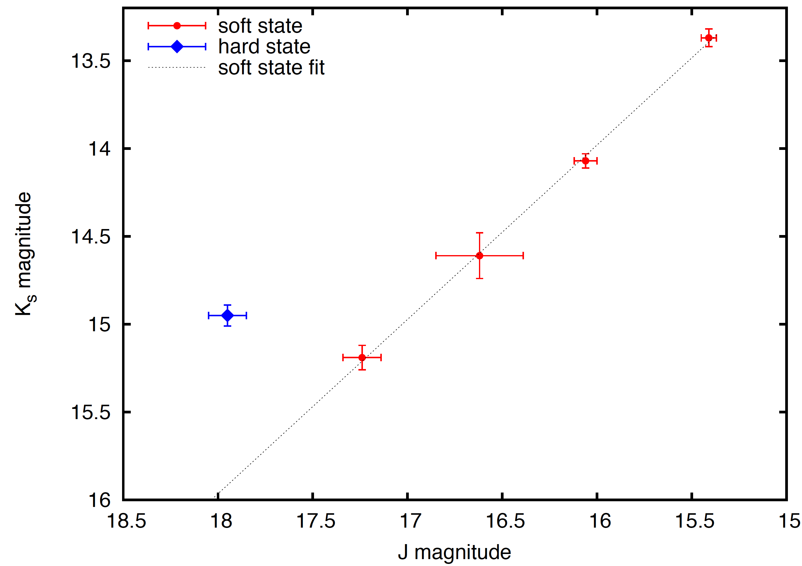
تم اكتشاف GX 339-4 في 1972 بواسطة كاشف الأشعة السينية MIT الموجود على متن المرصد الشمسي المداري (OSO) 7. يُظهر دورات فورة متكررة نسبيًا ذات نقاط قوة مختلفة (عادةً مرة واحدة كل 2-3 سنة). تقدر الفترة المدارية للنظام بـ 1.75570.0004 يومًا ( 42.140.01 ساعة) عن طريق قياس إزاحات دوبلر لخطوط الفلورسنت (Hynes et al., 2003). من المتوقع أن تكون المسافة إلى المصدر في نطاق 6-15 kpc (Hynes et al., 2004). ومع ذلك، فإن كتلة الجسم المضغوط والنجم المرافق، وكذلك ميل النظام مقيدة بشكل ضعيف للغاية. قام Heida et al. (2017) بتحليل منحنى السرعة الشعاعية وسرعة الدوران المتوقعة للجهة المانحة لتعيين حدود 2.3 9.5 إلى كتلة المجمع، ونسبة الكتلة = 0.18 0.05. زاوية ميل GX 339-4 ليست مقيدة بشكل جيد وتتراوح القيم في الأدبيات من 13∘3∘ (Miller et al., 2004, من الأشعة السينية) و 0∘-30∘ (Wu et al., 2001, من البصري) إلى 50∘10∘ (Basak & Zdziarski, 2016, من الأشعة السينية) و57.5∘20.5∘ (Heida et al., 2017, من البصري). ونظرًا لعدم اليقين الكبير في زاوية الميل، فإننا لا ندرج هذا المصدر في تحليلنا النهائي.
يتمتع GX 339-4 بتغطية جيدة لفائض IR الذي تم قياسه خلال التحولات المختلفة على مر السنين (انظر الجدول 2) بسبب المراقبة المكثفة بواسطة SMARTS (Coriat et al., 2009; Buxton et al., 2004; Dincer et al., 2012). جميع مقادير IR الزائدة التي تم الإبلاغ عنها لـ GX 339-4 موجودة تقريبًا في نطاقين مختلفين، 1.50-1.65 mag و2.98-3.20 mag. نناقش الأسباب المحتملة وراء هاتين القيمتين الزائدتين الملاحظتين في IR، وأي علاقة للاختلافات مع نوع الانتقال، وارتباطهما مع لمعان الأشعة السينية في قسم المناقشة.
2.9 H1743-322
تم اكتشاف H1743-322 أثناء فورة في 1997 بواسطة القمر الصناعي Ariel V (Kaluzienski & Holt, 1977) والقمر الصناعي HEAO-1 القمر الصناعي (Doxsey et al., 1977). استخدم Steiner et al. (2012) نموذجًا حركيًا للنفاثات لتقدير المسافة إلى هذا المصدر كـ 8.50.8 kpc وزاوية ميل النفاثات كـ 75∘ 3∘. في الأدبيات، لا يوجد قياس الميل باستخدام البيانات البصرية. في الوقت الحاضر، كتلة الثقب الأسود وكتلة النجم المرافق والفترة المدارية لهذا النظام غير معروفة أيضًا بشكل واضح.
لا يتوفر قياس مباشر لفائض IR من منحنى الضوء لهذا المصدر، لأنه تم أخذ عينات من انفجاراته جزئيًا فقط في IR. ومع ذلك، نشر Chaty et al. (2015) مقادير IR للمصدر من عدة انفجارات. نجد أن هناك علاقة قوية بين نطاقي و في الحالة اللينة (انظر الشكل 1)، وهو على الأرجح أن يكون بسبب انبعاث القرص. في الحالة الصلبة (عندما نتوقع مساهمة نفاثة)، تنحرف البيانات عن الارتباط؛ يكون النطاق أكثر سطوعًا من المتوقع من العلاقة، بواسطة mag. ومن ثم يعد ذلك مقياسًا لنطاق الزائد بسبب الانبعاث النفاث، فوق مركبة القرص، لذلك نحن نعتبر هذا تغيراً في القدر خلال انتقال الحالة.
2.10 XTE J1752-223
تم اكتشاف XTE J1752-223 في 2009 بواسطة RXTE (Markwardt et al., 2009). استخدمت Shaposhnikov et al. (2010) الارتباطات بين الخصائص الطيفية والتباينية مع GRO J1655-40 وXTE J1550-564، وقدرت المسافة بـ 3.5 0.4 kpc وكتلة BH هي . أجرى Russell et al. (2012) مراقبة بصرية لهذا المصدر أثناء انفجار 2009-10 واضمحلاله إلى حالة سكون، وقدرت الفترة المدارية المحتملة بساعات 22. قام Miller-Jones et al. (2011) بقياس زاوية ميل المصدر لتكون 49∘.
أجرى Chun et al. (2013) عمليات رصد متزامنة للأشعة السينية والبصرية/القريبة من الأشعة تحت الحمراء للمصدر أثناء اضمحلال انفجاره في 2010. لقد أظهروا أنه خلال الانتقال من الحالة اللينة إلى الحالة الصلبة، زاد انبعاث النطاق H بمقدار صغير: 0.35 0.18 mag.
2.11 Swift J1753.5-0127
تم اكتشاف Swift J1753.5-0127 في انفجار بواسطة Swift/BAT في 2005 (Palmer et. al., 2005). كان لديه فورة 12 لمدة عام، مع انفجار صغير قرب نهاية (Plotkin et. al., 2016; Shaw et al., 2019). قدر Zurita et al. (2008) الفترة المدارية الضوئية للمصدر بأنها 3.24430.0010 h. لاحقًا، استخدم Neustroev et al. (2014) قياسات السرعة الشعاعية لتقدير فترة مدارية قدرها 2.850.01، وهي واحدة من أقصر الفترات المدارية لأي فترة مدارية معروفة من BHXB. لحسابنا، نستخدم نطاق الفترة المدارية 2.85-3.24 ساعة لدمج كلتا القيمتين. باستخدام التحليل الطيفي البصري عالي الدقة والمحدد بالوقت، قدر Shaw et al. (2016) كتلة الجسم المضغوط بـ 7.41.2 . على الرغم من أن كتلة النجم المرافق غير معروفة، فقد قدر Neustroev et al. (2014) أنها تقع في النطاق 0.17-0.25 باستخدام علاقات فترة الكتلة التجريبية والنظرية لفترة مدارية ثنائية 2.85. ميل المصدر غير معروف بدقة؛ بينما يقترح Neustroev et al. (2014) حدًا أدنى يبلغ 40∘، يتوقع Shaw et al. (2019) حدًا أعلى يبلغ 80∘. المسافة إلى هذا المصدر أيضًا ليست مقيدة جيدًا وتشير دراسات مختلفة إلى نطاق كبير من المسافات المحتملة 1-10 kpc (Cadolle Bel et al., 2007; Zurita et al., 2008; Froning et al., 2014).
نفذت Tomsick et al. (2015) حملة متعددة الأطوال الموجية لـ Swift J1753.5-0127 في الحالة الصلبة خلال 2014 في أبريل. تم قياس تدفق النطاق K على أنه 0.4-0.7 mJy ، بينما كان انبعاث النفاثات 0.08 mJy (مقدر من الشكل 8 (ب) من Tomsick et al. (2015)). باستخدام هذه التقديرات، يمكننا أن نفترض حدوث تغيراً بمعامل في نطاق 1.13-1.25 عندما تتوقف النفاثة عن العمل، على الرغم من أننا لا نستطيع استبعاد احتمال أن تكون النفاثة أكثر خفوتًا بكثير. في Rahoui et. al. (2015)، يتم حساب تدفق النطاق K ليكون 0.7 mJy ويتم قياس انبعاث القرص على أنه 0.3 mJy. لذا، إذا تم إيقاف تشغيل النفاثة، فمن المتوقع حدوث تغيراً بمعامل بقيمة 1.75. بناءً على هاتين الدراستين، يمكننا أن نفترض بأمان تغيراً في التدفق بمعامل في نطاق 1-1.75 (أي ما يعادل 0-0.6 mag).
2.12 MAXI J1836-194
تم اكتشاف MAXI J1836-194 في المراحل الأولى من فورته في 2011 (Negoro et al., 2011). قام Russell et al. (2014a) بدراسة الأطياف الضوئية Very Large Telescope للمصدر، وقدّر زاوية ميل بين 4∘ - 15∘، بافتراض المسافات بين 4 و 10 كبك. من المتوقع أن يكون المتبرع نجم تسلسل رئيسي بكتلة 0.65 ، مع فترة مدارية قدرها 4.9 h. كتلة الجسم المضغوط ليست مقيدة بشكل جيد. ومع ذلك، يمكننا تقدير الحد الأدنى 2 ، بالنظر إلى الحد الأدنى على مسافة 4 kpc.
2.13 XTE J1859+226
تم اكتشاف XTE J1859+226 لأول مرة بواسطة RXTE في 1999 (Wood et al., 1999). استخدم Corral-Santana et al. (2011) كلا من القياس الضوئي البصري والمطياف للعثور على فترة مدارية قدرها 6.58 h، وزاوية ميل قدرها . قام Tetarenko et al. (2016) بجدولة كتلة ثقب أسود مركزي تبلغ 10.83 4.67 والحد الأعلى للنجم المصاحب 5.41 . لا تزال المسافة إلى هذا المصدر غير مؤكدة، حيث تستنتج دراسات مختلفة مسافات مختلفة إحصائيًا، على سبيل المثال 11 kpc (Zurita et al., 2002) و4.6-8.0 kpc Hynes et al. (2000) و83 kpc Hynes (2005). نحن نعتمد الأخير لحسابنا لأنه يشمل جميع القيم المبلغ عنها.
لاحظ Hynes et al. (2002) المصدر في النطاقات J وH وK خلال 1999-2000 وأظهر أن هناك فائضًا صغيرًا في IR في أدنى الترددات، في بداية انتقال الحالة من الحالة الصلبة إلى الحالة اللينة. كما هو موضح في Brocksopp et al. (2002)، تكون الحالة الصلبة الأولية حتى MJD 51464، وبعد ذلك أجرى المصدر عملية النقل. بيانات NIR الأولى في Hynes et al. (2002) موجودة على MJD 51465، في بداية النقل. يمكن رؤية فائض K-band NIR في SED الأول على MJD 51465، حيث تكون نقطة بيانات النطاق J قريبة من طيف القرص (see fig 4, Hynes et al., 2002). بمقارنة ذلك مع SED التي تم الحصول عليها على MJD 51469، عندما يقع النطاق K على استقراء القرص من الأشعة فوق البنفسجية/البصرية، يمكننا القول أن النفاث قد تلاشت بينما بقي القرص. يتم حساب انخفاض النطاق K خلال هذه الفترة على أنه 0.680.03 mag.
2.14 Swift J1910.2-0546
تم اكتشاف Swift J1910.2-0546 في نفس الوقت بواسطة Swift/BAT (Krimm et al., 2012) وMAXI (Usui et al., 2012) في 2012. قام كل من Llyod et al. (2012) وCasares et al. (2012) بفحص التغيرات الدورية في منحنى الضوء البصري لتقدير الفترة المدارية لتكون 2.2 ساعة و4 ساعة، على التوالي. قام Nakahira et al. (2012) بمراقبة المصدر على المدى الطويل ووضع حدًا أدنى لكتلة الجسم المضغوط 2.9 وعلى مسافة 1.70 kpc. تقدر زاوية الميل بين درجات 4 - 22 من التركيب الطيفي للأشعة السينية (Reis et al., 2013). لم يتم الإبلاغ عن أي قياسات بصرية للميل، وبالتالي فإننا لا نستخدمها في حساباتنا.
راقب Degenaar et al. (2014) تطور هذا المصدر أثناء الانفجار لمدة ثلاثة أشهر عند أطوال موجية مختلفة، وأظهر أن الانتقال من الحالة الصلبة إلى الحالة اللينة يتم في حوالي اليوم 103 (i.e. MJD 56180, see Fig 2 of Degenaar et al., 2014). أظهرت منحنيات الضوء ذات الأطوال الموجية المتعددة وتطور الألوان (see Fig 3 of Degenaar et al., 2014) انخفاضًا غير عادي يتبعه ارتفاع في جميع النطاقات قبل انتقال الحالة هذا مباشرة، دون تغيير في اللون. لذا فإن انخفاض التدفق الذي نحسبه هو بعد ذلك، بين اليوم 103 و 109 (MJD 56180 إلى 56186)، عندما حدث تغير اللون، مما يشير إلى انخفاض في انبعاث النفاثات. نجد أن انخفاض انبعاث IR خلال الانتقال من الحالة الصلبة إلى الحالة اللينة هو 0.410.28 mag.
العينة النهائية: تتكون عينتنا النهائية من المصادر الـ9 التي تتوافر لها قيود موثوقة على جميع المعلمات المطلوبة. نستبعد H 1743-322 من تحليلنا لأن الكتل والفترة المدارية غير معروفة لهذا المصدر (مع أنه مُدرج في الشكل 3). ونستبعد XTE J1752-223 من العينة النهائية لأن له حدوداً عليا فقط لكل من زاوية الميل والفترة المدارية، بينما كتلة النجم المرافق غير معروفة تماماً. ونستبعد أيضاً Swift J1910.2-0546 وMAXI J1535-571 إذ لا توجد في الأدبيات قياسات بصرية أو راديوية للميل. وأخيراً، نظراً إلى تعدد قيم الميل المعتمدة على النموذج والمبلّغ عنها لـ GX 339-4 في الأدبيات (مع اختلاف هذه القيم بعضها عن بعض بأكثر من 30 درجة)، نستبعد هذا المصدر أيضاً من تحليلنا، مع أننا نناقش GX 339-4 لاحقاً بمزيد من التفصيل. في الجدول 1 ندرج جميع BHXBs التي قيس لها فائض IR، ونميز المصادر المستبعدة بخط مائل.
3 النموذج
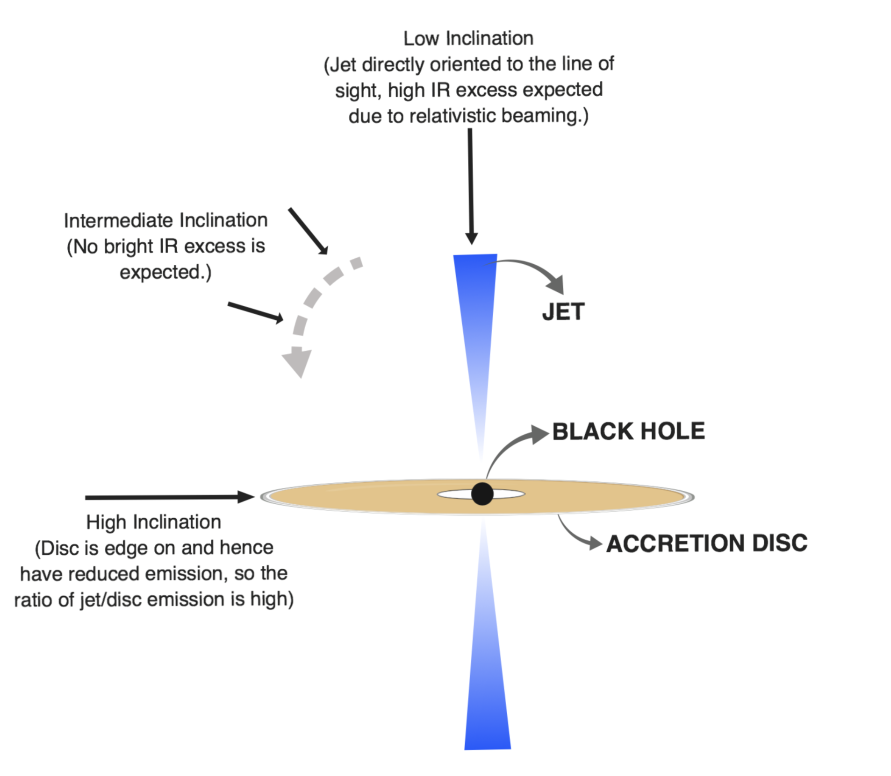
3.1 التنبؤ النظري النوعي
ومن الناحية النظرية، ينبغي أن يرتبط لمعان النفاث بزاوية الميل إذا كان البث يخضع لشعاع نسبي. في الواقع، لقد تبين أن بعض المصادر ذات فوائض IR الأكثر سطوعًا مقارنة بأقراصها هي أنظمة ذات زاوية ميل منخفضة (على سبيل المثال، 4U 1543-47 وMAXI J1836-194؛ انظر الجدول 1 و الشكل: 3).
بالنسبة للأنظمة ذات الميل العالي، يكون القرص تقريبًا على الحافة، مما يقلل من انبعاث القرص ولكن ليس انبعاث النفاث (إذا لم يكن النفاثة عالي الشعاع). يمكن أن يؤدي هذا إلى فوائض IR الساطعة نسبيًا في أنظمة الميل العالية. بالنسبة لزوايا الميل المتوسطة (درجة 30 - 60)، لا يُتوقع وجود فائض ساطع في IR لأي عامل لورنتز، وبالفعل فإن جميع BHXBs ذات زوايا الميل ضمن هذا النطاق لا تحتوي على فوائض بارزة في IR (انظر الشكل 3). عندما يكون الميل منخفضًا، يتم توجيه النفاثة مباشرة نحو خط البصر، ومن المتوقع وجود فائض بارز في IR بسبب الشعاع النسبي (انظر الشكل 2).
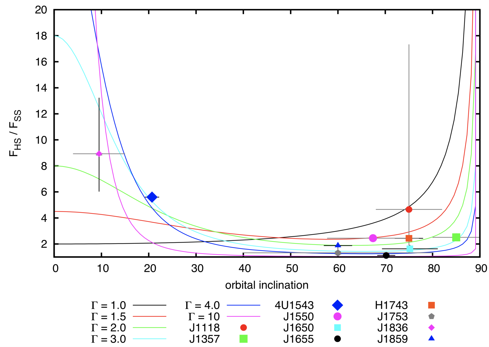
3.2 توقع النموذج لفائض IR
عندما يكون BHXB في الحالة اللينة، يتم إخماد النفاثة وبالتالي يمكن افتراض أن أي تدفق NIR ينشأ من قرص التراكم. عندما ينتقل المصدر إلى الحالة الصلبة، تظهر التدفقات مرة أخرى ونرى زيادة في التدفق في نطاق الطول الموجي NIR. إذا كان ظهور/اختفاء فائض NIR الذي لوحظ في BHXBs أثناء انتقال الحالة يحدث بسبب تشغيل/إيقاف تشغيل النفاث، فيمكننا استخدام نموذج تحليلي بسيط للتنبؤ بفائض التدفق النسبي المتوقع لكل مصدر. للقيام بذلك، نحسب المساحة المسقطة لقرص التراكم (لتقدير انبعاث القرص النسبي) وحزم دوبلر كدالة لعامل لورنتز (لاستنتاج الانبعاث النفاث).
يتم حساب المساحة المسقطة لقرص التراكم اعتمادًا على حجم القرص وزاوية الميل . بافتراض أن القرص تم تشعيعه بواسطة مصدر نقطي، فإن مقياس إعادة معالجة القرص هو ، حيث هو نصف قطر القرص الخارجي (انظر النقاش مع المعادلتين 5.94 و5.95 في Frank et al., 2002, والمراجع الواردة هناك). لذا فإن إعادة معالجة القرص المتوقعة (المرصودة) ، حيث يتناسب مع الفصل المداري، ويتناسب الفصل المداري مع (مثلاً van Paradijs & McClintock, 1994; Russell et al., 2006). ومن ثم، فإن إعادة معالجة القرص المسقط (المرصود) تخضع
| (1) |
ومن ثم، فإن انبعاث القرص IR هو ، حيث هو ثابت غير معروف يعتمد على سبيل المثال. كفاءة إعادة معالجة القرص
يمثل عامل دوبلر لانبعاث النفاثات اللمعان الراديوي المرصود للنفاثة نسبة إلى اللمعان الراديوي الجوهري (إطار الراحة). يمكن وصف هذه العلاقة بـ . يتم حساب باتباع نفس الطريقة كما في Gallo et al. (2003) عبر
| (2) |
حيث عوامل التراجع والاقتراب ؛ هي السرعة الإجمالية للمادة التي ينبعث منها الراديو بالنسبة لسرعة الضوء، و هي السرعة المقابلة لعامل لورنتز.
في الحالة اللينة، عندما لا نتوقع تدفقًا نفاثًا، يجب أن يتكون انبعاث IR بالكامل من انبعاث القرص (بما يتناسب مع ). من ناحية أخرى، يجب أن يساهم كل من القرص والنفاثة في انبعاث IR في الحالة الصلبة (حيث يتناسب التدفق الزائد IR مع ؛ ). ومن ثم، بالنسبة لكل مصدر، يمكننا استخدام المساحة المتوقعة المحسوبة للقرص، وعامل دوبلر للنفاثة، لتقدير التغير المتوقع في الحجم الذي نتوقعه خلال انتقال الحالة. يتم الحصول على هذه الكمية عن طريق
| (3) |
حيث هي نسبة الثابتين المجهولين، وتعتمد على الكفاءة الإشعاعية للقرص والنفاثة. في نموذجنا، نقوم بشكل أساسي باختبار ما إذا كان من الممكن استخدام حجم القرص وزاوية الميل للتنبؤ بنسبة التدفق النفاث/القرص في الحالة الصلبة. بالنسبة لمصدر بحجم قرص معين وزاوية ميل معينة، يمكننا التنبؤ بنسبة التدفق النفاث/القرص. وهذا يتطلب أن يكون لـ نفس القيمة لجميع المصادر. ومن المعروف نظريًا عند إعادة معالجة القرص، أن اللمعان البصري (ومن ثم أيضاً لمعان IR، انظر Russell et al., 2006) يتناسب مع لمعان الأشعة السينية مثل L L L (van Paradijs & McClintock, 1994). لذلك نتوقع العلاقة L. بالنسبة للنفاثة في الحالة الصلبة، بافتراض طيف مسطح من الراديو إلى الأطوال الموجية IR، وباستخدام المستوى الأساسي، نحصل على L L L. ومن ثم يمكننا أن نفترض، L، وتقريبًا L. لذلك، يمكن اعتبار C ثابتًا تقريبًا، وله اعتماد ضعيف جدًا على كل من لمعان الأشعة السينية ومعدل تراكم الكتلة. وقد أكدت العديد من الدراسات الرصدية أيضًا الارتباطات النظرية المتوقعة، ومعظمها يتبع العلاقة L L (مثلاً Homan et al., 2005; Coriat et al., 2009; Bernardini et al., 2016; Vincentelli et al., 2018). لذا فإن اعتماد الثابت على LX يكون أقل عمقًا ( L) عند استخدام علاقات المراقبة.
على الرغم من وجود محاذير في هذا الافتراض، فإننا لا نرى أنها ستغير هذا الاعتماد كثيراً. يتمثل أحد هذه المحاذير في الكسر النفاث المرصود في الطيف، وهو كسر كثيراً ما يُرى في نطاق IR ويقع غالباً في الجزء الرقيق بصرياً من طيف السنكروترون. فإذا كان تردد كسر النفاثة يتدرج أيضاً مع لمعان الأشعة السينية، فلن يكون انبعاث IR النفاث متناسباً بعد ذلك مع الانبعاث الراديوي النفاث. ولكن، كما هو مبين في Russell et al. (2013b)، لا تبدو هناك علاقة قوية بين تردد كسر النفاثة وLX في الحالة الصلبة. ومن ثم يمكننا توقع أن يكون LR متناسباً مع LIR، وهو ما يُرى رصدياً أيضاً في Russell et al. (2006). ويتمثل محذور آخر في أن العلاقة L L لا تصمد رصدياً في جميع BHXBs. ويبدو أن المصادر الخافتة راديوياً تُظهر علاقة أقل انحداراً عند LX وعلاقة أشد انحداراً عند قيم LX المرتفعة. غير أن المصادر الخافتة راديوياً وُجد أنها خافتة في IR أيضاً، ولذلك ينبغي أن يظل L LIR الصادر من النفاثة قائماً. لذلك لا نتوقع أن تغير هذه المحاذير بدرجة كبيرة افتراض الاعتماد الضعيف للثابت على LX وعلى معدل تراكم الكتلة. وعلى أي حال، من المهم ملاحظة أنه إذا أدت معلمات أخرى دوراً، مثل اختلاف كفاءات إعادة المعالجة بين الأقراص أو اختلاف خصائص النفاثات بما ينتج تدفقات نفاثة مختلفة عند الميل وعامل لورنتز نفسيهما، فإننا نتوقع أن يقدم نموذجنا وصفاً ضعيفاً للبيانات.
يوضح الشكل 3 التنبؤ النظري لنسبة انبعاث IR في الحالة الصلبة مقابل الحالة اللينة (أي ) كدالة لزاوية الميل لمختلف قيم معامل لورنتز، بافتراض أن نصف قطر القرص وC متماثلان للجميع (=1 و=1، أي cos). كما هو متوقع، نرى أن فائض IR مرتفع لكل من قيم الميل المنخفضة جدًا والعالية جدًا، في حين يُظهر نطاق الميل المتوسط زيادة قليلة جدًا في IR لجميع عوامل لورنتز. نحن أيضًا نرسم جميع زوايا BHXBs التي تكون فيها زوايا IR الزائدة والميل مقيدة جيدًا. ومن المشجع أن نلاحظ أن جميع مصادر BHXB تشغل المنطقة التي تنبأ بها نموذجنا نظريًا.
3.3 شكوك النموذج
تهيمن لايقينية ميل المصدر على لايقينية عامل دوبلر . ومن ناحية أخرى، تعتمد لايقينية مساحة القرص المسقطة على كتلة الجسم المضغوط وكتلة النجم المرافق والفترة المدارية وزاوية الميل. وتعد زاوية الميل المصدر السائد للايقينية في حساب تغير تدفق IR المتوقع، لأن مساحة القرص المسقطة تتناسب مع مجموع كتل مكوناته مرفوعاً إلى القوة ، ومع الفترة المدارية مرفوعة إلى القوة (انظر المعادلة 1). ومن ثم فمن الضروري ألا يُستخدم في التحليل إلا المصادر ذات تقدير موثوق للميل. وكما هو موضح في القسم 2، فإننا لا نستخدم إلا زوايا الميل المستمدة إما من القياسات البصرية أو من الرصدات الراديوية، حفاظاً على الاتساق والموثوقية.
نظرًا لأن حالات عدم اليقين المرتبطة بكتلة الجسم المضغوط والنجم المرافق له لا تساهم كثيرًا في تغيير حجم IR، فإن هذا يمنحنا إمكانية استخدام نطاق كتلة قياسي للجسم المضغوط والنجوم المرافقة في BHXBs إذا لم تكن هذه المعلمات معروفة جيدًا بالنسبة للمصدر. على سبيل المثال، عندما يكون لدينا حد أدنى لكتلة الجسم المضغوط، فإننا نضع حدًا أعلى متحفظًا قدره 25 في تحليلنا الافتراضي. ونفترض أيضًا حدًا أدنى متحفظًا قدره 2 لكتلة الجسم المضغوط (والذي سيكون أقل منه نجمًا نيوترونيًا). وبالمثل، وضعنا حدًا أدنى متحفظًا قدره 0.08 على كتلة النجم المرافق (وأسفله نظام القزم البني). أخيرًا، نفرض أيضًا حدًا أدنى يبلغ 2 من الساعات على الفترة المدارية، حيث أنه لا يوجد نظام BHXB مؤكد ديناميكيًا ومن المعروف أن لديه فترة مدارية أقل من 2 من الساعات.
4 تقدير عامل لورنتز للنفاثات
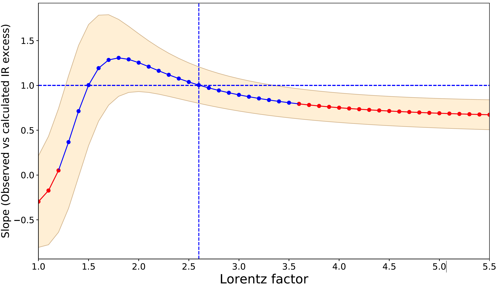
نحن نهدف إلى تقييد عوامل لورنتز للنفاثات لأول مرة لـ BHXBs التسعة ببيانات جيدة من الجدول 1. سنفعل ذلك من خلال نمذجة التغير الملحوظ في حجم IR لكل BHXB باستخدام القيود السابقة على الميول وكتل المكونات والفترات المدارية المجدولة في الجدول 1، إلى جانب نموذجنا التحليلي البسيط المحددة في القسم 3.2 (أي المعادلات 1 و2 و4).
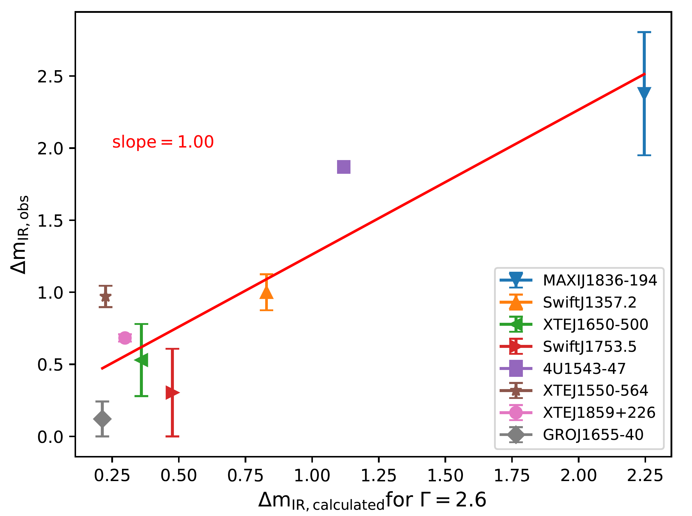
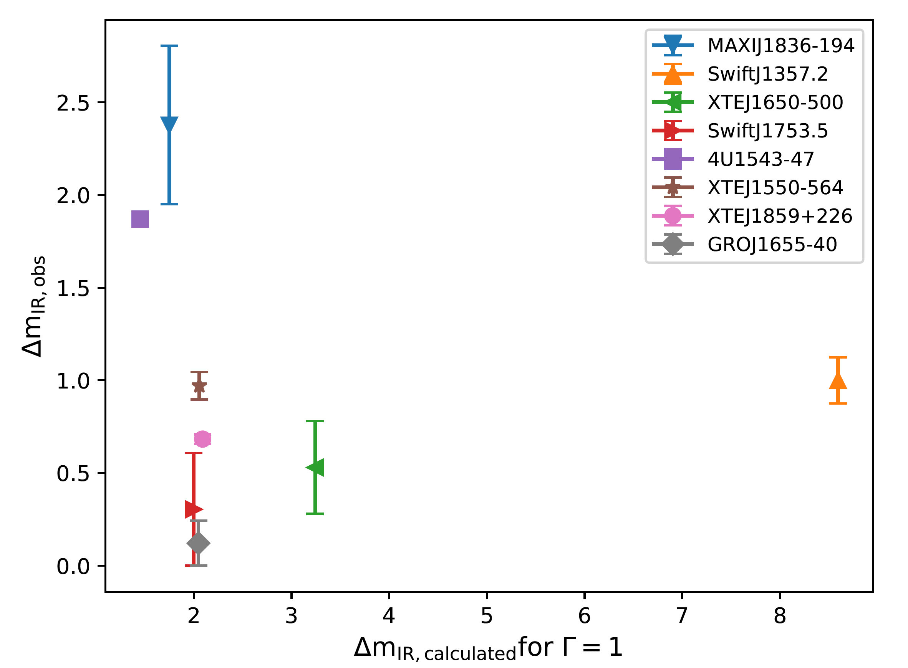
كاختبار أول، نفترض في البداية عامل لورنتز مشتركاً لجميع BHXBs، للتحقق مما إذا كان الحزم النسبي سبباً واقعياً محتملاً لاختلاف سعات فائض IR بين المصادر. ولهذا نحسب فائض IR المتوقع (، باستخدام المعادلات 1 و2 و4) لكل من هذه المصادر باستعمال عوامل لورنتز مختلفة، وبافتراض أن الثابت هو =1. في هذا الاختبار لا ندرج XTE J1118+480، لأن لهذا المصدر قيمتين معتمدتين على النموذج لفائض IR المرصود، تختلف إحداهما عن الأخرى بأكثر من 2.5 mag. ويتمثل أسلوب أولي لتقدير مجال عامل لورنتز الذي يعيد إنتاج فائض IR المرصود في BHXBs على أفضل وجه في فحص الميل بين القيم المرصودة والمتوقعة لتغير قدر IR أثناء انتقال الحالة. فميل قدره 1 يعني تلقائياً أن توزيع فائض IR المرصود يطابق التوزيع المحسوب لذلك العامل المعين من عوامل لورنتز. وكما هو مبين في الشكل 4، لا تتفق فوائض IR المتوقعة مع المرصودة إلا لعوامل لورنتز الواقعة في المجال 1.3 - 3.5. ويشير هذا النهج إلى قيمة عامل لورنتز 2.6، حيث ترتبط نسب التدفق المرصودة والمتوقعة ارتباطاً قوياً بميل قدره 1. وينحرف الميل منهجياً عن 1 ويضعف الارتباط كلما انتقلنا إلى عوامل لورنتز أخرى (انظر الشكل 4).
بالنسبة لعامل لورنتز 2.6، نعرض التغير المتوقع في الحجم مقابل التغير الملحوظ في الشكل 5. من الواضح أن هناك علاقة قوية (معامل بيرسون r = 0.9، القيمة p = 0.001)، مما يشير إلى أنه من المحتمل جدًا أن يلعب عامل لورنتز دورًا مهمًا في سعة فائض IR في BHXBs. بالنسبة لعامل لورنتز = 1، أي الانبعاث غير المحزوم، نجد أنه لا يوجد ارتباط على الإطلاق (معامل بيرسون r = -0.2، القيمة p = 0.461). وهذا يدعم بقوة كون انبعاث IR في الحالة الصلبة صادراً عن تدفق خارجي ومحزوماً، مع عامل لورنتز مرجح 1.3 - 3.5 (عندما يكون C = 1). لكن من المستبعد جدًا أن تحتوي جميع BHXBs على عامل لورنتز واحد فقط. ولإجراء تحليل ملائم، ننتقل إلى الإحصاء البايزي.
4.1 النموذج البايزي الهرمي
لإجراء دراسة تفصيلية، نعتمد إطاراً بايزياً لتحليل بياناتنا. أولاً، نستخدم الرمز السفلي للدلالة على جسم محدد، حيث يأخذ القيم من 1 إلى 9. وعندئذ،
بالنسبة إلى BHXB ذي الفهرس ، يكون لدينا معطى مرصود ، وخمس معلمات نموذجية خاصة بـ BHXB، هي و و و،
و. وتنطبق المعلمة في نموذجنا على جميع BHXBs كما نوقش في القسم 3.2. أما المعلمات و و،
و فلها كلها قيود قبلية، في حين لا توجد مثل هذه القيود للمعلمات . لذلك نفترض أن المعلمات مسحوبة من توزيع أم مشترك بين BHXBs، وموسوم بمعلمة واحدة (انظر لاحقاً في هذا القسم). إجمالاً، لدينا 9 نقاط بيانات و47 معلمات،
والقيود السابقة المختلفة.
من أجل الراحة التدوينية، دعونا:
| (4) |
| (5) |
| (6) |
| (7) |
باستخدام لتمثيل كامل نموذجنا وافتراضاته، يمكننا كتابة التوزيع الاحتمالي الخلفي على جميع المعلمات لدينا على النحو التالي:
| (8) |
حيث يتم إعطاء التوزيع الاحتمالي السابق لمجموعة فرعية من معلمات النموذج بواسطة:
| (9) |
وقد تم اشتقاق هذه التعبيرات باستخدام نظرية بايز، وتعريف الاحتمال الشرطي، وبافتراض استقلال الاحتمالات السابقة.
تم إدراج القيود السابقة (PDFs) على المعلمات و و و التي تتميز في المعادلة 10 في الجدول 1. إذا تم إعطاء إدخال المعلمة في الجدول 1 كنطاق، فمن المفترض أن يكون PDF السابق للمعلمة توزيعًا موحدًا على النطاق (باستثناء الميل حيث يُفترض أن يكون PDF السابق موحدًا في على النطاق لتلبية الاتجاه المتناحي). إذا كان الدخول بالنسبة لمعلمة في الجدول 1 يتم تقديمها في النموذج ، فمن المفترض أن PDF السابقة للمعلمة هي توزيع غوسي مع يعني والانحراف المعياري ، ومع القطع الثابت عند 0∘ و90∘ لـ ، 2 و25 لـ ، 0.08 لـ ، و2 h لـ (راجع القسم 3.3). أخيرًا، إذا تم إعطاء إدخال المعلمة في الجدول 1 كقيمة سفلية/علوية الحد، فمن المفترض أن يكون PDF السابق للمعلمة توزيعًا موحدًا على النطاق لأعلى/لأسفل حتى القطع الثابت المذكور سابقًا. تم اختيار PDF السابقة لتكون موحدة في مع نطاق غير مقيد وذلك للحد من بشكل صارم القيم الموجبة (المادية) مع افتراض أن جميع أوامر الحجم لـ متساوية في الاحتمال قبلياً. تعمل هذه المقدمات بشكل فعال بمثابة تنظيم لمعلمات نموذج 37 في في مشكلة الاستدلال البايزي.
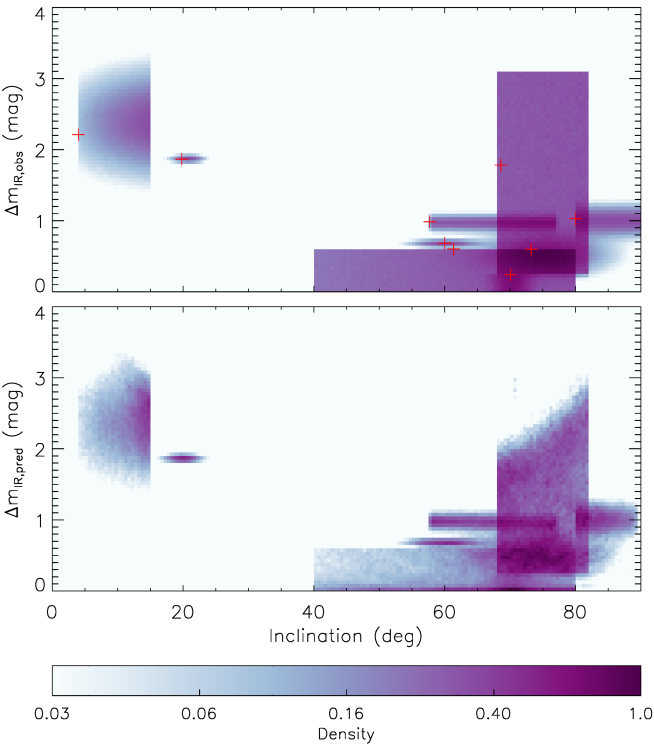
العنصر التالي المطلوب في نموذج بايزي الهرمي الخاص بنا هو تعريف التوزيع الأم لعوامل لورنتز للنفاثات الخاصة بـ BHXBs. بالنسبة إلى نفاثات AGN، وجدت العديد من الدراسات توزيعات عامل لورنتز الكلي في شكل قانون القوة ( مع ؛ Padovani & Urry, 1992; Lister & Marscher, 1997; Saikia et al., 2016, إلخ. انظر القسم 5.3 لنقاش مفصل). ولذلك، فإننا نعتمد التوزيع الأم الآتي PDF لكل معلمة :
| (10) |
وبافتراض استقلال ، يمكننا أن نكتب:
| (11) |
بالنسبة إلى PDF (المفرط) السابق، فإننا نفترض توزيعًا موحدًا على النطاق اللانهائي السلبي إلى 1.
العنصر الأخير المطلوب في نموذج بايزي الهرمي الخاص بنا هو تعبير عن دالة الاحتمالية لبياناتنا ، ممثلة كـ . نحن نفترض أن جميع نقاط البيانات يتم ملاحظتها بشكل مستقل، وبالتالي يمكننا أن نكتب:
| (12) |
يمكن حساب احتمالات نقاط البيانات الفردية من خلال اعتماد نموذج الضوضاء كجزء من نموذجنا الكامل . لدينا:
| (13) |
حيث عبارة عن مساهمة في الضوضاء، ويتم حساب من المعلمات ، و، و، و، و، و (باستخدام المعادلات 1 و2 و 4). في الجدول 1، تم إدراج فائض IR إما كنطاق من إلى أو كرقمين . بالنسبة إلى BHXB مع إدراج فائض IR كنطاق، قمنا بتعيين:
| (14) |
| (15) |
حيث يمثل توزيعًا موحدًا بالحدود الدنيا والعليا و على التوالي. وإلا فإننا نضع:
| (16) |
| (17) |
حيث يمثل توزيعًا غاوسيًا بمتوسط والانحراف المعياري . وبجمع هذا معًا، لدينا:
| (18) |
في اللوحة العلوية من الشكل 6، لكل BHXB، قمنا برسم الأسطح المتناسبة مع كثافة الاحتمالية السابقة كدالة للميل (محور ) ولاحظنا زيادة IR في (محور ). يتم تعريف الأسطح بواسطة PDFs السابقة للميلان، وقيم المرصودة إلى جانب نموذج الضوضاء المعتمد، والمدرجة في الجدول 1. نموذج جيد للبيانات يجب أن تكون قادرة على إعادة إنتاج كثافات الذروة لـ دون الحصول على ميول مستنبطة بعيدة جدًا عن قممها المقابلة PDFs السابقة.
4.2 استدلال المعلمة
| Name | Inclination (∘) | () | () | (hrs) | ||
|---|---|---|---|---|---|---|
| XTE J1118+480 | 68.6 | 7.31 | 0.190 | 4.0784143 | 1.00 | 1.782 |
| Swift J1357.2-0933 | 80.0 | 25.00 | 0.402 | 2.82 | 2.39 | 1.028 |
| 4U 1543-47 | 19.80 | 9.40 | 2.453 | 26.793771 | 2.47 | 1.865 |
| XTE J1550-564 | 57.70 | 9.12 | 0.302 | 37.0088025 | 1.36 | 0.986 |
| XTE J1650-500 | 73.23 | 4.91 | 2.360 | 7.690 | 2.82 | 0.599 |
| GRO J1655-40 | 70.04 | 5.41 | 1.471 | 62.92580 | 3.88 | 0.240 |
| Swift J1753.5-0127 | 61.37 | 25.00 | 0.250 | 3.240 | 2.74 | 0.600 |
| MAXI J1836-194 | 4.0 | 14.38 | 0.638 | 4.90 | 1.72 | 2.210 |
| XTE J1859+226 | 60.0 | 11.57 | 5.410 | 6.580 | 2.37 | 0.682 |
| 2.410 | ||||||
| 2.316 |
| Name | Inclination (∘) | |
|---|---|---|
| XTE J1118+480 | 68.3, 70.2, 75.2, 79.7, 81.7 | 1.02, 1.16, 1.76, 3.44, 5.36 |
| Swift J1357.2-0933 | 80.2, 81.2, 83.8, 87.0, 89.0 | 2.23, 2.66, 3.35, 4.83, 8.25 |
| 4U 1543-47 | 16.67, 18.38, 19.96, 21.51, 23.13 | 1.45, 1.94, 2.67, 3.79, 6.08 |
| XTE J1550-564 | 58.07, 60.32, 66.40, 73.33, 76.57 | 1.11, 1.35, 1.61, 1.90, 2.38 |
| XTE J1650-500 | 62.69, 68.53, 74.44, 79.79, 84.95 | 2.14, 2.68, 3.54, 4.99, 8.80 |
| GRO J1655-40 | 66.33, 68.21, 70.16, 72.05, 73.95 | 3.90, 4.82, 8.21, 25.13, 83.62 |
| Swift J1753.5-0127 | 41.80, 49.78, 63.21, 74.25, 79.12 | 2.96, 3.82, 6.74, 19.25, 59.59 |
| MAXI J1836-194 | 4.8, 7.8, 11.8, 14.1, 14.9 | 1.17, 1.45, 1.94, 6.00, 22.90 |
| XTE J1859+226 | 53.83, 56.80, 59.94, 62.92, 65.73 | 2.01, 2.26, 2.53, 2.90, 3.58 |
| 1.82, 2.18, 2.60, 3.24, 4.74 | ||
| 2.67, 2.22, 1.88, 1.61, 1.40 |
نقوم بتعظيم لوغاريتم دالة كثافة الاحتمالية الخلفية في المعادلة 9 عبر معلمات 47 في نموذجنا من خلال باستخدام خوارزمية Nelder-Mead البسيطة (Nelder & Mead, 1965; Wright, 1996) كما هي مطبقة في حزمة Python scipy.optimize. يؤدي هذا إلى الحصول على تقدير الاحتمال الأقصى لاحقياً (MAP) للمعلمات الأكثر ملائمة، والتي تم الإبلاغ عن ذلك في الجدول 3، وبعضها موضح في الأشكال 6 (اللوحة العلوية)، و7، و 8. على وجه التحديد، تؤدي المعلمات الأفضل ملائمة إلى ملاءمة جيدة إلى البيانات كما هو موضح11 1 أينما تم استخدام توزيع موحد، أو حد صارم، في نموذجنا (أي في PDFs السابق ونموذج الضوضاء)، من المحتمل أن يتم العثور على الحد الأقصى لـ PDF الخلفي على حدود النطاق المسموح به، ما لم يكن مسموحًا به النطاق لمعلمة معينة كبير بما فيه الكفاية. ومن ثم فإن وضع رموز الزائد الحمراء عند الحدود السطحية في اللوحة العلوية من الشكل 6 لن يكون غير متوقع. في اللوحة العلوية من الشكل 6 (حيث تمثل رموز الزائد الحمراء أفضل قيم النموذج ملاءمة، في حين أن الأسطح الملونة هي وظائف كثافة الاحتمالية السابقة). نجد أن الخوارزمية تتقارب مع نفس الحل MAP في كل مرة لفترة طويلة نظرًا لأن القيم الأولية للمعلمات المقيدة بـ PDFs الموحد السابق تقع ضمن النطاقات المقبولة (وإلا فستفشل الخوارزمية في التقارب).
نحن نختبر عينة PDF الخلفية (المعادلة 9) باستخدام مجموعة العينات MCMC emcee (Foreman-Mackey et al., 2013) مع مشايات 1000 التي تمت تهيئتها في كرة غاوسية ضيقة حول تقديرات المعلمة MAP (Hogg & Foreman-Mackey, 2018). ينفذ كل مشاية حرقًا لخطوات 200، ثم يتكرر خلال خطوات 50000 اللاحقة والتي يتم تسجيل خطوات 2000 الأخيرة منها. نظرًا للأبعاد العالية نسبيًا للنموذج، وجدنا أنه كذلك من الضروري تعيين معلمة مقياس الاقتراح إلى قيمة غير افتراضية تبلغ وذلك لتحقيق كسر قبول متوسط لكل مشاية من 0.25. في اللوحة السفلية من الشكل 6، نستخدم عينات 2106 MCMC لرسم رسوم بيانية ثنائية الأبعاد، لكل BHXB، من الميل المستنتج الخلفي (محور ) وتوقع IR الزائد (محور ). من الواضح أن عينات MCMC توفر تطابقًا جيدًا مع قيم IR الزائدة ضمن ضوضاء المراقبة مع تقييد بعض الميول المستنتجة (قارن بين اللوحات في الشكل 6).
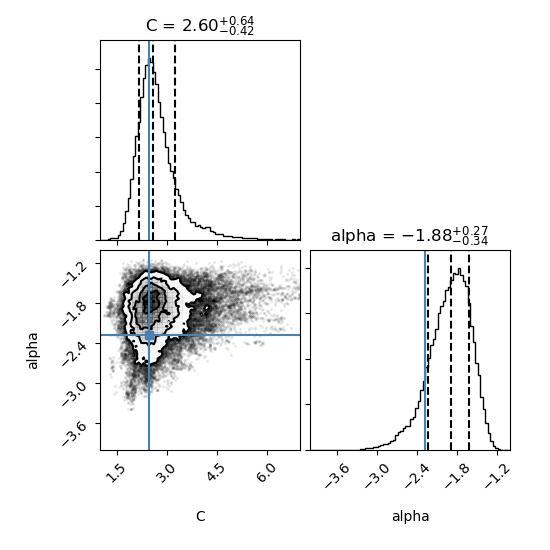
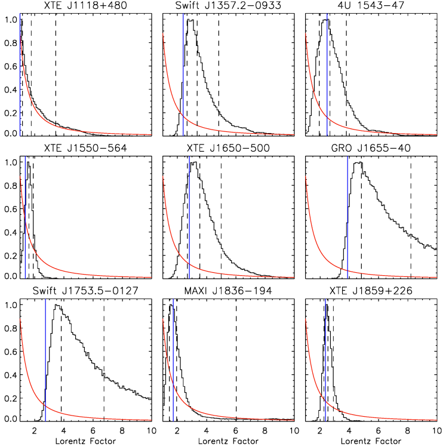
في الجدول 4، نقوم بالإبلاغ عن قيم المعلمات المتوسطة لعينات MCMC كتقديرات المعلمات المستنتجة باستخدام 1-sigma و2-sigma المناطق ذات المصداقية المحسوبة باستخدام النسب المئوية 15.9 و84.1 لعينات MCMC، والنسب المئوية 2.3 و97.7، على التوالي. تجدر الإشارة إلى أن تقديرات المعلمات هذه، عندما يتم أخذها معًا، لا تمثل الحل ”الأفضل” (انظر Hogg & Foreman-Mackey, 2018). النتيجة الرئيسية لدينا هي ذلك ، الذي يميز التوزيع الأم لعوامل لورنتز للنفاثات لـ BHXBs (انظر القسم 5.2 للمناقشة). في الشكل 7، نرسم رسومًا بيانية أحادية البعد لمعلمات النموذج و بالإضافة إلى رسم بياني ثنائي الأبعاد إظهار التباين بينهما. يتم رسم تقديرات معلمات MAP الأكثر ملاءمة ( و) بخطوط زرقاء، في حين أن يتم رسم النسب المئوية 15.9 و50 و84.1 بثلاثة خطوط سوداء متقطعة رأسية. المعلمات و لا تتدهور، والتي محظوظ بالنظر إلى دورها كمعلمات عالمية لنموذجنا.
وتحظى عوامل لورنتز الفردية للنفاثات لكل BHXB بأهمية كبيرة أيضاً. تُرسم التوزيعات المستنتجة كمدرجات تكرارية (مطبعة إلى القمة) في الشكل 8، مع تمثيل تقديرات معلمات MAP الأفضل ملاءمة بخطوط زرقاء عمودية، وتمثيل المئينات 15.9 و50 و84.1 لعينات MCMC بخطوط سوداء عمودية متقطعة. ويرسم التوزيع الأم المستنتج لعوامل لورنتز للنفاثات في BHXBs بوصفه المنحنى الأحمر في كل لوحة. أما التوزيع الخلفي لعامل لورنتز في XTE J1118+480 فلا يختلف عملياً عن التوزيع الأم، ولذلك لا تقيده البيانات الواردة في الجدول 1 على نحو مفيد. كذلك، لا يمتلك GRO J1655-40 وSwift J1753.5-0127 إلا حدوداً دنيا مقيدة جيداً لعوامل لورنتز الخاصة بنفاثاتهما (انظر الجدول 4). ومع ذلك، تمتلك BHXBs المتبقية قيوداً خلفية مفيدة على عوامل لورنتز للنفاثات، ولا سيما XTE J1550-564 وMAXI J1836-194 وXTE J1859+226 (انظر القسم 5.2 لمزيد من المناقشة).
5 مناقشة
5.1 عامل لورنتز لنفاثات BHXB في الأدبيات
لا يوجد إجماع واضح على قيمة عوامل لورنتز المتوقعة في نفاثات BHXB. بعد Mirabel & Rodriguez (1994)، تم اقتراح أن نفاثات BHXB ستكون أقل نسبية بكثير من النفاثات AGN، التي تحتوي على 2. وضع Fender & Kuulkers (2001) حدًا أعلى قدره 5، بحجة أن القيمة الأعلى من ذلك من المحتمل أن تدمر العلاقة المرصودة بين تدفقات الذروة الراديوية والأشعة السينية. علاوة على ذلك، استخدم Gallo et al. (2003) التشتت في علاقة الراديو/الأشعة السينية لنفاثات BHXB لتقييد عوامل لورنتز للنفاثات المدمجة بـ 2.
هناك أيضًا دراسات لتقدير عامل لورنتز للنفاثات المدمجة في عدد قليل من نفاثات BHXBs الفردية. على سبيل المثال، استخدم Casella et al. (2010) تباين IR لـ GX 339-4 لتقييد عامل لورنتز للمصدر ليكون 2. وجد Russell et al. (2015) ارتباطًا شديد الانحدار بين الراديو/الأشعة السينية في MAXI J1836-194 وجادل بأن عامل لورنتز لهذا المصدر يجب أن يختلف من 1 عند سطوع منخفض للأشعة السينية إلى 3-4 عند سطوع عالي للأشعة السينية لإنتاج الارتباط الملحوظ. درس Tetarenko et al. (2019) الفواصل الزمنية بين نطاقات الأشعة السينية والراديو لـ Cygnus X-1 ووجد قيمة عامل لورنتز 2.59.
من ناحية أخرى، بالنسبة للنفاثات العابرة، توقع Fender et al. (2004) أن تكون عوامل لورنتز الخاصة بها أعلى من تلك الخاصة بالنفاثات المدمجة، على الرغم من أن Miller-Jones et al. (2006) لم يجد أي دليل رصدي مهم لدعم هذا الادعاء. جمعت Miller-Jones et al. (2006) جميع البيانات المتاحة عن زوايا فتح نفاثات ‘الباليستية’ في BHXBs، وحسبت عوامل لورنتز المطلوبة لإنتاج زوايا الفتح الصغيرة هذه عبر تأثير دوبلر النسبي المستعرض، ووجدت أن عوامل لورنتز المشتقة لها قيمة متوسطة تبلغ 10 (والتي أكبر بكثير من النفاثات المدمجة من دراسات أخرى).
ولكن على الرغم من كل هذه الدراسات، لا يزال من غير الواضح ما هي قيم عامل لورنتز، أو توزيع عامل لورنتز الذي يمكن توقعه بشكل عام للنفاثات في BHXBs. نحن نستخدم نهجا جديدا لمحاولة الإجابة على هذا السؤال للنفاثات المدمجة.
5.2 دلالات نتائجنا على النفاثات المدمجة
نجد أن التوزيع الأم لعوامل لورنتز الكلية للنفاثات في BHXBs يتوافق مع قانون القوة مع المؤشر . وهذا مشابه جداً لنظائرها فائقة الكتلة، حيث يوجد عادةً توزيع عامل لورنتز الكلي في شكل قانون القوة (على سبيل المثال، قانون قوى مع لنفاثات البلازارات، كما حصل عليه في Saikia et al., 2016).
نقوم أيضًا بتقدير عوامل لورنتز الفردية لكل BHXB في عينتنا (انظر الجدول 4). نجد أن عامل لورنتز لمعظم نفاثات BHXB منخفض جدًا، على سبيل المثال لـ XTE J1550-564، و لـ MAXI J1836-194، و لـ XTE J1859+226. تم العثور على عوامل لورنتز لـ Swift J1357.2-0933 لتكون ، 4U 1543-47 لتكون وXTE J1650-500 . بالنسبة لاثنين من المصادر التي لا تحتوي على قيم مقيدة جيدًا لفائض IR (أي إما كانت لها حدود أو قيم تعتمد على النموذج)، يمكننا فقط توفير حدود لعامل لورنتز الكلي. على سبيل المثال، بالنسبة إلى GRO J1655-40 وSwift J1753.5-0127، يمكننا تقييد الحدود الدنيا فقط لـ 3.90 و2.96، على التوالي. وذلك لأن فائض IR لهذين الجسمين يتوافق مع كونه صفرًا، مما يسمح بعوامل لورنتز عالية جدًا لأنها مصادر ميل عالية. إذا أمكن إجراء قياسات زائدة أكثر دقة لـ IR، فمن الممكن أن تكون عوامل لورنتز مقيدة بشكل أفضل.
5.3 مقارنة بين نفاثات BHXB وAGN
الطريقة الأكثر شيوعًا لحساب عامل لورنتز في نفاثات AGN، وخاصة النفاثات النسبية في البلازارات، هي من خلال مراقبة السرعة الظاهرة للنفاثة وتقدير عامل حزم دوبلر. يمكن حساب السرعة الظاهرة للنفاثات مباشرةً باستخدام قياس التداخل الأساسي الطويل جدًا (VLBI) للرصدات (مثلاً Jorstad et al., 2001; Kellermann et al., 2004; Britzen et al., 2008)، لكن تقدير عامل حزم دوبلر (انظر Lähteenmäki & Valtaoja, 1999, لمقارنة الطرائق المختلفة) أكثر تعقيدًا بكثير. لقد وجدوا أن الكوازار الراديوي الصاخب النموذجي له عامل لورنتز 10، في حين أن الكائن النموذجي BL Lac له عامل لورنتز 5.
حاولت العديد من الدراسات تقييد توزيع عامل لورنتز لسكان AGN ككل، بدلاً من تقدير عامل لورنتز للمصادر المفردة. تم ملاحظة شكل من أشكال قانون القوة لتوزيع عامل لورنتز بالنسبة إلى نفاثات AGN الأكثر نسبية، والتي توجد بشكل رئيسي في البلازارات. عثر Padovani & Urry (1992) على توزيع عامل لورنتز على شكل N() بينما استخدم Lister & Marscher (1997) توزيعًا على شكل N() حيث . في الآونة الأخيرة، قام Saikia et al. (2016) بتقييد توزيع N() في نطاق من 1 إلى 40 باستخدام المستوى الأساسي البصري لنشاط الثقب الأسود (Saikia et al., 2015). ومن المثير للاهتمام ملاحظة أن توزيع عامل لورنتز الأصلي لـ BHXBs الذي تم الحصول عليه من هذه الدراسة يشبه تمامًا توزيعات عامل لورنتز المتوقعة لـ AGN، ويتبع العلاقة N() .
5.4 تدفق الأشعة السينية وعامل لورنتز
بافتراض أن فائض IR ناتج عن بداية نفاثة في الحالة الصلبة، فمن المهم أيضًا التحقق مما إذا كان هناك ارتباط بين فائض IR المرصود (أو بشكل غير مباشر عامل لورنتز) ولمعان الأشعة السينية للمصدر أثناء الانتقال. إذا كان هذا الارتباط موجودًا، فمن المهم تسوية فائض IR لهذه المصادر عن طريق إزالة تأثير وجود لمعان مختلف للأشعة السينية أثناء الانتقال أولاً، من أجل استخدام فائض IR بشكل صحيح لتقييد عامل لورنتز لهذه المصادر. للتحقق من ذلك، نستخدم متوسط لمعان الأشعة السينية لعينتنا في نطاق الطاقة 2-10 كيلو إلكترون فولت، المحسوب من تدفقات الأشعة السينية التي لوحظت أثناء بداية ونهاية انتقال الأشعة تحت الحمراء.
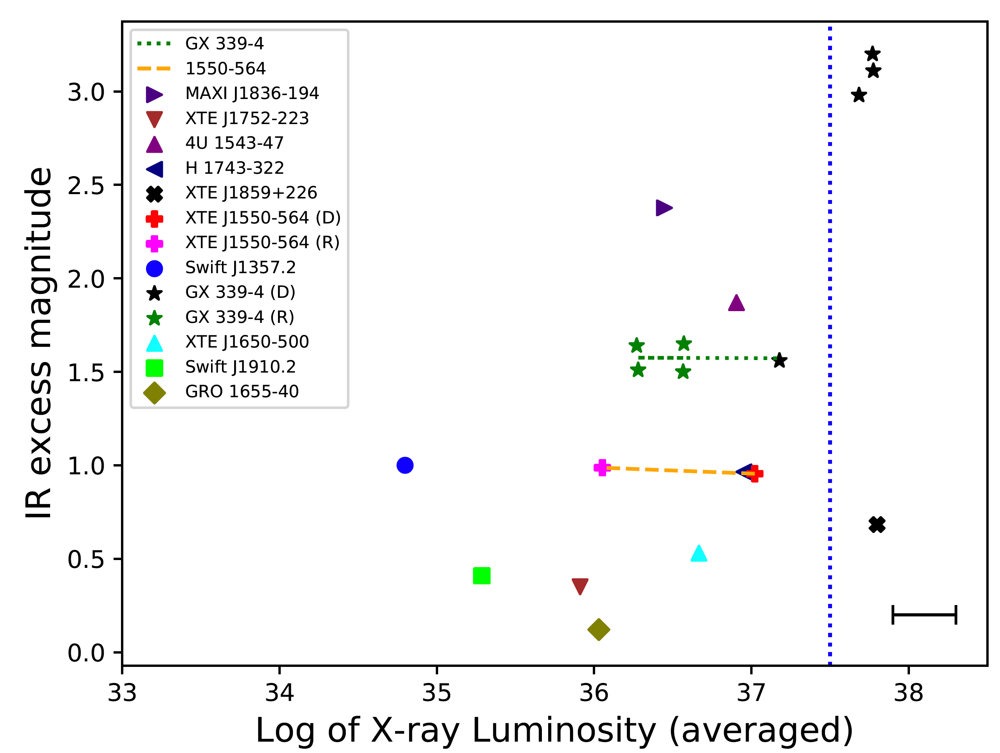
نحن نأخذ في الاعتبار أولاً حالة GX 339-4 حيث أن هذا المصدر لديه تمثيل عادل للعديد من فائض IR الذي تمت ملاحظته أثناء التحولات المختلفة للحالة على مر السنين. قمنا بقياس فائض IR الذي لوحظ في GX 339-4 في تحولات الحالة المختلفة لـ 8 (أربعة أثناء الانتقال إلى الحالة اللينة وأربعة أخرى أثناء الانتقال إلى الحالة الصلبة). نرى أن فائض IR الذي يتم قياسه عندما ينتقل المصدر إلى الحالة الصلبة يكون دائمًا في نطاق مماثل (تغيير حجم 1.5 في IR). لكن من ناحية أخرى، فإن فائض IR الذي يتم قياسه أثناء الانتقال إلى الحالة اللينة يختلف بالنسبة إلى لمعان الأشعة السينية للنظام. بالنسبة لسطوع الأشعة السينية الأصغر، يكون فائض IR صغيرًا ( 1.5 mag، على غرار فائض IR الذي تم قياسه أثناء الانتقال إلى الحالة الصلبة)، بينما بالنسبة لسطوع الأشعة السينية الأعلى، يكون فائض IR المقاس أعلى بكثير ( 3.2 ماج). لذلك نرى نطاقين مختلفين من فائض IR لـ GX 339-4، ولكن لا يوجد اتجاه واحد يربط لمعان الأشعة السينية (2-10 keV) مع فائض IR (انظر الشكل 9). لقد وجدنا أن استخدام نطاق طاقة أشعة سينية أكبر يبلغ 0.1–100 كيلو فولت (للمصادر ذات البيانات المتاحة) لا يغير النتائج بشكل كبير.
XTE J1550-564 هو المصدر الآخر الوحيد الذي قمنا بقياس فائض IR أثناء كل من صعود المصدر وانخفاضه. ومن المثير للاهتمام أن نلاحظ أن فائض IR الذي شوهد في كلا التحولين متشابهان بشكل ملحوظ، على الرغم من أن سطوع الأشعة السينية خلال هذين التحولين كان مختلفًا. لذلك لا يمكننا العثور على علاقة بين لمعان الأشعة السينية وفائض IR المرصود لـ XTE J1550-564. على الرغم من أنه بالنسبة لنطاقات سطوع الأشعة السينية الأعلى، فقد رأينا أن GX 339-4 لها نطاق مختلف من فائض IR، إلا أن جميع BHXBs الأخرى في عينتنا لا تتمتع بمثل هذا اللمعان العالي للأشعة السينية، باستثناء XTE J1859+226. بالنسبة لـ XTE J1859+226، يكون الميل هو درجة 60. كما هو مبين في الشكل 1، فإن هذا الميل ليس مرتفعًا جدًا ولا منخفضًا جدًا بحيث لا يكون له تأثير كبير على فائض IR لعوامل لورنتز المختلفة. ومن ثم لم نجد أي دليل على اعتماد لمعان الأشعة السينية، باستثناء 10∼37.5 erg s-1 (2-10 keV). لذلك لا نحتاج إلى تطبيع فائض IR لأي تأثير محتمل لوجود لمعان مختلف للأشعة السينية أثناء الانتقال. نلاحظ أنه بشكل عام عند الانتقال من الحالة الصلبة إلى الحالة اللينة، ينخفض انبعاث IR وكذلك تدفق الأشعة السينية الصلبة في وقت واحد، قبل انخفاض الأطوال الموجية الراديوية (see e.g. Fig. 1 in Homan et al., 2005). من ناحية أخرى، عند الانتقال من الحالة اللينة إلى الحالة الصلبة، يرتفع تدفق الراديو والأشعة السينية الصلبة أولاً، يليه IR بعد تأخير كبير (10-12 أيام في حالة GX339-4، انظر مثلاً Corbel et al., 2013). قد لا يتوافق النطاق الزمني لارتفاع IR خلال هذا التحول مع تواريخ انتقال الأشعة السينية بالضبط. ومع ذلك، فإن تغيير هذا النطاق الزمني لن يؤدي إلا إلى تحويل بعض نقاط البيانات قليلاً في الاتجاه الأفقي في الشكل 9، والذي لا يغير الاستنتاجات هنا، ويظل سعة فائض IR كما هو. نظرًا لوجود مصدرين فقط في عينتنا لدينا بيانات عن كل من هبوط وارتفاع IR، فإن بياناتنا غير كافية حاليًا لاختبار أي اعتماد على انخفاض أو ارتفاع IR ولمعان الأشعة السينية الذي يحدث فيه هذا، على العمليات الفيزيائية الأخرى مثل تطور النفاث الداخلي أثناء التحول. ومع المزيد من البيانات، يمكننا اختبار ذلك في أعمال المتابعة.
ليس من الواضح لماذا يبدو أن فائض IR من GX 339–4 يحتوي على مجموعتين ( mag و mag). ومع ذلك، كما يفترض نموذجنا، إذا كانت الحزم النسبي مسؤولة عن سعة فائض IR، فيمكن اقتراح أن عامل لورنتز يزيد لـ GX 339–4 عند هذه اللمعان العالي جدًا لـ erg s-1. وهذا يتطلب أن يكون الميل منخفضًا (انظر أدناه) بحيث تكون النفاثة متجهة نحونا. عند هذه السطوع العالي، عند النقطة التي يقوم فيها المصدر بالانتقال نحو الحالة اللينة، يتحرك نصف القطر الداخلي للقرص إلى أنصاف أقطار أصغر وتتقلص منطقة التدفق الساخن (مثلاً Fender & Muñoz-Darias, 2016, والمراجع الواردة هناك). قد يؤدي هذا إلى زيادة عامل لورنتز (انظر Fender et al., 2004; Russell et al., 2015) ويمكن أن يكون سببه دوران الثقب الأسود الذي يلعب دورًا في تعزيز سرعة النفاث، على الرغم من أن هذا أمر تخميني. بالنسبة لجميع لمعانات الأشعة السينية الأخرى (أقل من )، لم نجد أي دليل على وجود علاقة بين عامل لورنتز واللمعان، ولكننا نجد دليلًا (في BHXBs الوحيدين مع أكثر من قياس واحد) على قيمة ثابتة لعامل لورنتز عند سطوع مختلف للأشعة السينية. ومن ثم، على الرغم من أن كلا من التدفق النفاث وتدفق القرص يزدادان مع معدل تراكم الكتلة، فإن هذا التحليل يوضح أن عامل لورنتز يغير التدفق النفاث، مما يعطي دفعة للبعض ويقلل للآخرين، مقارنة بتدفق القرص. يبدو أن عامل لورنتز وزاوية الميل يحددان مدى سطوع التدفق مقارنة بالقرص، عند أي لمعان معين للأشعة السينية.
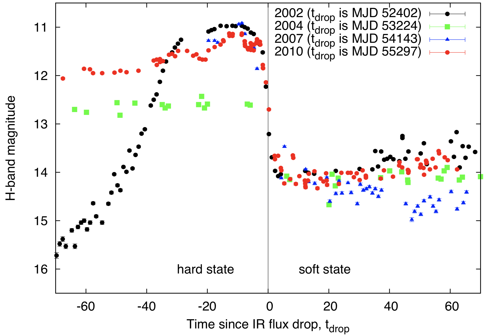
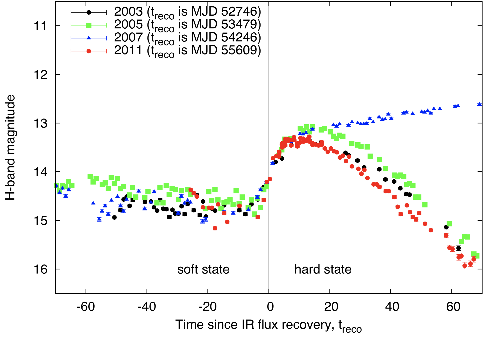
5.5 فائض IR وميل GX 339-4
GX 339-4 هي واحدة من أفضل BHXBs التي تمت دراستها عند الأطوال الموجية IR. هناك أربعة تحولات لهذا المصدر تم تغطيتها بشكل صحيح في نطاق IR (2004، 2005، 2007 و2010)، خلال كل من مرحلة الصعود والانحلال. يظهر في الشكل 10 مخطط مشترك لجميع الأوقات التي دخل فيها هذا المصدر في مرحلة انتقالية وأظهر زيادة/انخفاض IR في الأطياف. وكما هو موضح، فإن قدر النطاق H قبل الانتقال إلى الحالة الصلبة هو نفسه تقريبًا بالنسبة لجميع الفورات الأربعة. وبالمثل، بعد إيقاف تشغيل النفاثة المدمجة وانتقال المصدر إلى الحالة اللينة، ينخفض قدر النطاق H مرة أخرى إلى نفس القيمة لجميع الفورات الأربعة، بغض النظر عن قدر النطاق H أثناء الحالة الصلبة. إذا اعتبرنا سلوك GX339-4 نموذجيًا لـ BHXBs، فيمكننا القول أنه من الأفضل حساب تغير حجم IR أثناء التحول من الحالة اللينة إلى الحالة الصلبة، حيث تبدو البيانات أكثر اتساقًا مقارنة بانخفاض التدفق أثناء الانتقال من الحالة الصلبة إلى الحالة اللينة (قد يكون هذا مشكلة فقط عند سطوع الأشعة السينية العالية جدًا؛ انظر القسم 5.4).
إن ميل GX 339-4 مقيد بشكل ضعيف للغاية. يقدم Cowley et al. (2002) حجة مفادها أن الميل المداري يجب أن يكون أقل من 60∘ بسبب عدم وجود الكسوف في البيانات البصرية. يجادل Ludlam et al. (2015) بأن الميل لا يمكن أن يكون أقل من 40∘ من أجل الحصول على كتلة ديناميكية متوافقة مع نتائج Hynes et al. (2003). عثر Yamada et al. (2009) على نطاق محتمل من الميل 25∘ -45∘ عند مستوى الثقة 90%. لكن، أجرى Wu et al. (2001) رصدات طيفية بصرية لـ GX 339-4 خلال حالاته الطيفية للأشعة السينية عالية الليونة ومنخفضة الصلابة ووجد أن الميل المداري يبلغ حوالي 15∘ إذا كانت الفترة المدارية 14.8 ساعة. بينما وجد Kolehmainen & Done (2010) أن الميول i 45∘ تعطي تناسبًا أفضل في الحالة عالية الليونة عند تركيب استمرارية القرص لقياس الدوران، يقوم Shidastu et al. (2011) بتحليل خط الحديد K باستخدام نموذج خط القرص للوصول إلى زاوية ميل أفضل ملاءمة 50∘. في الآونة الأخيرة، قام Heida et al. (2017) بتحليل منحنى السرعة الشعاعية وسرعة الدوران المتوقعة لـ GX 339-4 وتقييد الميل الثنائي إلى 37∘ ¡ i ¡ 78∘. يتنبأ تحليلنا بأن ميل GX 339-4 يجب أن يكون أقل بكثير مما كان متوقعًا سابقًا في العديد من الدراسات، حيث أن فائض IR المرصود لـ GX 339-4 يتوافق مع نموذجنا فقط إذا كان i (انظر الشكل 1). 3).
5.6 محاذير دراستنا والأخطاء المتضمنة
ومن المهم أن نلاحظ المحاذير في دراستنا، والتي يمكن أن تساهم في عدم اليقين في نتيجة هذه الورقة، وربما تزيد من المعلمات الحرة في نموذجنا. تم جمع المعلمات الفيزيائية لعينتنا، بما في ذلك كتل الجسم المضغوط والنجم المرافق، وزاوية ميل المصدر فيما يتعلق بخط البصر والفترة المدارية، وما إلى ذلك، من الأدبيات. تم استخدام طرق مختلفة (تستخدم بشكل أساسي الرصدات الضوئية أو الراديوية) لتقدير ميل المصادر، وهو المصدر الرئيسي للخطأ. بالنسبة للميل الذي تم الحصول عليه من الدراسات البصرية، افترضنا أن النفاثة متعامدة مع المستوى المداري. في الواقع، يتوقع Fragos et al. (2010) أن غالبية BHXBs لها زوايا اختلال صغيرة إلى حد ما ( 10∘). ولكن قد لا يكون هذا هو الحال بالنسبة لجميع المصادر في عينتنا، حيث يوجد BHXBs حيث يبدو بالتأكيد أن النفاثة غير محاذية للمدار الثنائي (مثلاً Maccarone, 2002). علاوة على ذلك، يشير انتشار Type C QPOs في BHXBs إلى أنه إذا كان نموذج التقدم النسبي صحيحًا (انظر مثلاً Stella & Vietri, 1998)، فيجب إطلاق النفاثة من القرص الداخلي وبالتالي قد تكون المحاذاة غير الصحيحة بين المدار الثنائي والقرص الداخلي شائعة.
المتغير الآخر الذي لم نأخذه في الاعتبار في نموذجنا هو الشكل الهندسي/السرعة للنفاثة. إذا لم يكن النفاث مخروطيًا تمامًا بل متسعاً، فيجب أن يؤدي التمدد الأديابي إلى القضاء على انبعاث التردد المنخفض بشكل أسرع من المتوقع، مما يعطي طيفًا أكثر انقلابًا. وبالمثل، إذا لم يكن ملف سرعة النفاثة ثابتًا، ولكن النفاثة تتسارع عند التحرك للخارج، فيمكن أن يحزم الانبعاث أكثر/أقل عند ترددات أقل/أعلى، مما يؤثر مرة أخرى على الشكل الطيفي. ويشير الطيف الأكثر انقلاباً إلى انبعاث نفاث أعلى بالنسبة للقرص، والعكس صحيح بالنسبة إلى الطيف الأكثر انحدارًا.
نستخدم أيضًا الافتراض بأن القرص المسقط بالكامل لـ BHXB يساهم في انبعاث IR. قد لا يكون هذا صحيحًا تمامًا لأنه من المحتمل أن الجزء الخارجي فقط من القرص سوف ينبعث في نطاق IR. ومع ذلك، بما أننا نقوم بحساب فائض IR ‘النسبي’ لجميع هذه المصادر، فإننا لا نتوقع أن تكون مشكلة كبيرة في تحليلنا. علاوة على ذلك، وبمقارنة مقدار السكون IR للنجم المرافق مع المقدار الخافت IR لنظام الثقب الأسود أثناء الانتقال، نجد أن مساهمة النجم المرافق أقل بكثير من 10% من إجمالي التدفق، باستثناء حالة GRO 1655-40 (راجع القسم 2.7). ومن ثم فإننا نهمل انبعاث IR القادم من النجم المرافق في نموذجنا، ونطرح مساهمته في GRO J1655-40.
نظرًا لعدم وجود مراقبة IR كافية لـ BHXBs أثناء انتقالات الحالة، بينما تم حساب بعض تغييرات التدفق IR أثناء ارتفاع IR (أي عندما ينتقل المصدر من الحالة اللينة إلى الحالة الصلبة)، تم تقدير عدد قليل من التغييرات الأخرى خلال فترة اضمحلال IR (أي عندما ينتقل المصدر إلى الحالة اللينة ويتم إيقاف تشغيل النفاثة). قد يؤدي هذا أيضًا إلى زيادة عدم اليقين في نتائجنا. بالإضافة إلى ذلك، نستخدم بيانات النطاق H والنطاق K لقياس فائض IR. من المهم ملاحظة أن سعة فائض IR المقاسة باستخدام نطاقات K قد تكون أكبر قليلاً من الفائض المقاس في نطاق H. علاوة على ذلك، لا تتوفر تغطية كافية لـ IR لجميع المصادر. لذلك، أثناء تقدير تغير التدفق IR أثناء تحولات الحالة، كانت البيانات المتاحة لبعض المصادر محدودة للغاية ويمكن أن تؤدي إلى مزيد من عدم اليقين. لقد حاولنا إدراج مثل هذه الأخطاء في حالة عدم اليقين بشأن فائض IR، ولكن هناك حاجة إلى قياسات أفضل للدراسات المستقبلية.
أخيرًا، تتضمن النمذجة البايزية وضع عدد كبير من الافتراضات، أهمها أن عوامل لورنتز مأخوذة من التوزيع الأم المشترك لـ BHXBs، وأن هذا التوزيع الأم له شكل قانون القوة مع مؤشر باعتباره حرًا واحدًا (فرط) المعلمة. يبدو هذا الاختيار معقولًا بالنظر إلى عوامل لورنتز في النفاثات AGN يبدو أيضًا أنه يتبع توزيع قانون القوة. ومع ذلك، إذا كان هذا الافتراض غير صحيح، ثم وينبغي أن تؤخذ نتائج النمذجة لدينا بحذر. علاوة على ذلك، لم نستكشف الاحتمالات الأخرى للتوزيع الأم.
6 الاستنتاج
من المتوقع أن ينشأ انبعاث NIR المرصود في BHXBs أساساً من الجزء الخارجي لقرص التراكم ومن النفاثة. ويُرصد فائض في انبعاث IR في كثير من BHXBs في الحالة الصلبة. ندرس هذا الفائض في انبعاث IR اعتماداً على تجميع لجميع BHXBs الواردة في الأدبيات والتي قيس لها فائض IR. وباستخدام نموذج نوعي بسيط لحزم انبعاث IR الصادر من النفاثة وللمساحة الإسقاطية لقرص التراكم، نبيّن أن سعة خفوت IR أو تعافيه عبر انتقالات الحالة يُتوقع أن تكون منخفضة جداً عند زوايا الميل المتوسطة ( 30 - 60 درجة). وتؤكد الرصدات أنه لا يوجد، ضمن هذا المجال من زوايا الميل، أي BHXB ذي فائض IR بارز. وباستخدام سعة خفوت/تعافي IR والمعلمات المدارية المعروفة وإطار بايزي بسيط، نقيّد لأول مرة عامل لورنتز للنفاثات في عدة BHXBs. وتحت افتراض أن توزيع عامل لورنتز لنفاثات BHXB هو قانون قوة N()، نجد أن ، وهو قريب على نحو ملحوظ من مؤشر قانون القوة لتوزيعات عامل لورنتز الكلي في النفاثات شديدة النسبية في AGN. ويمكن تحسين هذا العمل بقياسات ميل أفضل وبمراقبة كافية في IR لمزيد من BHXBs أثناء انتقالات الحالة. ونجد أيضاً أن خفوت/تعافي IR ذا السعة الكبيرة جداً، المرصود مراراً في GX 339-4، يتطلب زاوية ميل أدنى بكثير ( 15∘) مما توقعته دراسات كثيرة سابقاً. وتوضح هذه النتائج مدى فائدة مراقبة OIR عبر انتقالات الحالة في دراسة خصائص النفاثات.
يشكر DMR المعهد الدولي لعلوم الفضاء (ISSI) في برن، سويسرا، على الدعم والضيافة خلال اجتماع الفريق ‘النظر إلى اقتران القرص بالنفاثة من زوايا مختلفة: اعتماد مرصودات تراكم الثقوب السوداء على الميل’ في أكتوبر–نوفمبر 2018. ويقر DMB وDMR بدعم صندوق تعزيز البحث في NYU Abu Dhabi بموجب المنحة RE124.
References
References
- Baglio et al. (2018) Baglio M. C., Russell D. M., Casella P., Noori H. A., Yazeedi A. A., Belloni T., Buckley D. A. H. et al., 2018, ApJ, 867, 2
- Basak & Zdziarski (2016) Basak R. & Zdziarski A. A., 2016, MNRAS, 458, 2199
- Beer & Podsiadlowski (2002) Beer M.E. & Podsiadlowski P., 2002, MNRAS 331, 351
- Bernardini et al. (2016) Bernardini F., Russell D. M., Kolojonen K. I. I., Stella L., Hynes R. I., Corbel, S., 2016, ApJ, 826, 149
- Blandford & Königl (1979) Blandford R.D., Königl A., 1979, ApJ, 232, 34
- Britzen et al. (2008) Britzen, S., Vermeulen, R. C., Campbell, R. M., et al. 2008, A&A, 484, 119
- Brocksopp et al. (2002) Brocksopp C., et al., 2002, MNRAS, 331, 765
- Buxton & Bailyn (2004) Buxton M. M. & Bailyn C. D., 2004, ApJ, 615, 880
- Buxton et al. (2004) Buxton M. M., Bailyn C. D., Capelo H. L., Chatterjee R., Dincer T., Kalemci E., Tomsick J. A., 2012, AJ, 143,130
- Cadolle Bel et al. (2007) Cadolle Bel M., Ribo M., Rodriguez J. et al., 2007, ApJ, 659, 549
- Cadolle Bel et al. (2011) Cadolle Bel, M., Rodriguez, J., DAvanzo, P., et al. 2011, A&A, 534, A119
- Calvelo et al. (2009) Calvelo D. E., Vrtilek S. D., Steeghs D., Torres M. A. P., Neilsen J., Filippenko A. V., Gonzalez Hernandez J. I., 2009, MNRAS, 399, 539
- Casares et al. (2012) Casares J., Rodriguez-Gil P., Zurita C., et al. 2012, ATel, 4347
- Casella et al. (2010) Casella P., et al., 2010, MNRAS, 404, L21
- Chaty et al. (2003) Chaty S., Haswell C. A., Malzac J., Hynes R. I., Shrader C. R. & Cui W., 2003, MNRAS, 346, 689
- Chaty & Bessolaz (2006) Chaty S. & Bessolaz N., 2006, A&A, 455, 639
- Chaty et al. (2015) Chaty S., Munoz Arjonilla A. J. & Dubus G., 2015, A&A, 577, A101
- Chun et al. (2013) Chun Y. Y., Dincer T., Kalemci E. et al, 2013, ApJ, 770, 10
- Corbel & Fender (2002) Corbel S. & Fender R.P, 2002, ApJ, 573
- Corbel et al. (2003) Corbel S., Nowak M.A., Fender R.P., Tzioumis A.K., Markoff S., 2003, A&A, 400, 1007
- Corbel et al. (2013) Corbel, S., Aussel, H., Broderick, J. W., et al. 2013, MNRAS, 431, L107
- Coriat et al. (2009) Coriat, M., Corbel, S., Buxton, M. M., et al. 2009, MNRAS, 400, 123
- Corral-Santana et al. (2011) Corral-Santana J. M., Casares J., Shahbaz T., Zurita C., Martínez-Pais I. G., Rodriguez-Gil P., 2011, MNRAS, 413, L15
- Corral-Santana et al. (2013) Corral-Santana J. M., Casares J., Munoz-Darias T., Rodriguez-Gil P., Shahbaz T., Torres M. A. P., Zurita C., Tyndall A. A., 2013, Science, 339, 1048
- Cowley et al. (2002) Cowley, A. P., Schmidtke, P. C., Hutchings, J. B., & Crampton D., 2002, AJ, 123, 1741
- Curran et al. (2012) Curran, P. A., Chaty, S., & Zurita Heras J. A. 2012, A&A, 547, A41
- Degenaar et al. (2014) Degenaar N., Maitra D., Cackett E. M., Reynolds M. T. , Miller J. M. et al., 2014, ApJ, 784, 122
- Dincer et al. (2012) Dincer T., Kalemci E., Buxton M. M., Bailyn C. D., Tomsick J. A., Corbel S, 2012, ApJ, 753, 55
- Doxsey et al. (1977) Doxsey, R., Bradt, H., Fabbiano, G., et al. 1977, IAU Circ., 3113, 2
- Falcke et al. (2004) Falcke H., Körding E., Markoff S., 2004, A&A, 414, 895
- Fender & Kuulkers (2001) Fender R.P. & Kuulkers E., 2001, MNRAS, 324, 923
- Fender (2003) Fender R.P., 2003, MNRAS, 340, 1353
- Fender et al. (2004) Fender R. P., Belloni T. M., Gallo E., 2004, MNRAS, 355, 1105
- Fender & Muñoz-Darias (2016) Fender R. & Muñoz-Darias T., 2016, in Haardt F., Gorini V., Moschella U., Treves A., Colpi M., eds, Lecture Notes in Physics, Berlin Springer Verlag Vol. 905, Lecture Notes in Physics, Berlin Springer Verlag. p. 65
- Foreman-Mackey et al. (2013) Foreman-Mackey D., Hogg D.W., Lang D. & Goodman J., 2013, PASP, 125, 306
- Fragos et al. (2010) Fragos T., Tremmel M., Rantsiou E. & Belczynski K., 2010, ApJL, 719, 1
- Frank et al. (2002) Frank J., King A., Raine D. J., 2002, Accretion Power in Astrophysics: Third Edition
- Froning et al. (2014) Froning C. S., Maccarone T. J., France K., et al., 2014, ApJ, 780, 48
- Gallo et al. (2003) Gallo E., Fender R.P., Pooley G.G., 2003, MNRAS, 344, 60
- Gallo et al. (2004) Gallo, E., Corbel, S., Fender, R. P., Maccarone, T. J., & Tzioumis A. K., 2004, MNRAS, 347, L52
- Gallo et al. (2014) Gallo E., Miller-Jones J. C. A., Russell D. M., et al. 2014, MNRAS, 445, 290
- Gandhi et al. (2011) Gandhi, P., Blain, A. W., Russell, D. M., et al. 2011, ApJL, 740, L13
- Gandhi et al. (2017) Gandhi, P., Bachetti M., Dhillon V. S., et al. 2017, Nature Astronomy, 1, 859
- Garnavich & Quinn (2000) Garnavich P. M. & Quinn J., 2000, IAU Circ. 7388
- Gelino et al. (2006) Gelino D. M., Balman S., Kiziloglu U., Yilmaz A., Kalemci E., Tomsick J. A., 2006, ApJ, 642, 438
- Gendreau et al. (2017) Gendreau K., Arzoumanian Z., Markwardt C., et al., 2017, ATEL 10768
- Greene et al. (2001) Greene J., Bailyn C. D., Orosz J. A., 2001, ApJ, 554, 1290
- Harmon et al. (1995) Harmon B. A. et al., 1995, Nature, 374, 703
- Heida et al. (2017) Heida, M.; Jonker, P. G.; Torres, M. A. P.; Chiavassa, A., 2017, ApJ, 846, 132
- Hiemstra et al. (2009) Hiemstra B., Soleri P., Mendez M., Belloni T., Mostafa R., Wijnands R., 2009, MNRAS, 394, 2080
- Heinz & Merloni (2004) Heinz S. & Merloni A., 2004, MNRAS, 355, L1
- Hjellming & Rupen (1995) Hjellming R. M., Rupen M. P., 1995, Nat, 375, 464
- Hogg et al. (2010) Hogg D. W., Myers A. D., Bovy J., 2010, ApJ, 725, 2166
- Hogg & Foreman-Mackey (2018) Hogg D.W. & Foreman-Mackey D., 2018, ApJSS, 236, 11
- Homan et al. (2005) Homan J., Buxton M., Markoff S., Bailyn C. D., Nespoli E. & Belloni T., 2005, ApJ, 624, 295
- Homan et al. (2006) Homan J., Wijnands R., Kong A., Miller J. M., Rossi S., Belloni T., Lewin W. H. G., 2006, MNRAS, 366, 235
- Hynes et al. (2000) Hynes R. I., Mauche C. W., Haswell C. A., Shrader C. R., Cui, W., Chaty S., 2000, ApJ, 539, L37
- Hynes et al. (2002) Hynes, R. I., Haswell, C. A., Chaty, S., Shrader, C. R., & Cui,W. 2002, MNRAS, 331, 169
- Hynes et al. (2003) Hynes R.I., Steeghs D., Casares J., Charles P. A. & O’Brien K., 2003, ApJ, 583, L95
- Hynes et al. (2003b) Hynes R.I. et al., 2003, MNRAS, 345, 292
- Hynes et al. (2004) Hynes R.I., Steeghs D., Casares J., Charles P. A., O?Brien K., 2004, ApJ, 609,317
- Hynes (2005) Hynes, R. I. 2005, ApJ, 623, 1026
- Hynes et al. (2006) Hynes R. I., et al. , ApJ , 2006, vol. 651 pg. 401
- Jain et al. (2001) Jain R. K.,Bailyn C. D.,Orosz J. A.,McClintock J. E. & Remillard R. A., 2001, ApJ, 554. L181
- Jorstad et al. (2001) Jorstad, S. G., Marscher, A. P., Mattox, J. R., et al. 2001, ApJS, 134, 18
- Jorstad et al. (2005) Jorstad, S. G., Marscher, A. P. & Lister, M. L., et al. 2005, AJ, 130, 1418
- Kaluzienski & Holt (1977) Kaluzienski, L. J., & Holt, S. S. 1977, IAU Circ., 3099, 3
- Kalemci et al. (2013) Kalemci, E., Dincer, T., Tomsick, J. A., et al. 2013, ApJ, 779, 95,
- Kalemci et al. (2016) Kalemci E., Begelman M. C., Maccarone T. J., Dincer T., Russell T. D., Bailyn C. & Tomsick J. A., 2016, MNRAS 463, 615
- Kellermann et al. (2004) Kellermann K. I., Lister M. L., Homan D. C., et al. 2004, ApJ, 609, 539
- Kelly et al. (2012) Kelly B. C., Shetty R., Stutz A. M., et al. 2012, ApJ, 752, 55
- Kolehmainen & Done (2010) Kolehmainen, M. & Done, C., 2010, MNRAS, 406, 2206
- Koljonen et al. (2015) Koljonen, K. I. I., Russell, D. M., Fernandez-Ontiveros, J. A., et al. 2015, ApJ, 814, 139
- Kreidberg et al. (2012) Kreidberg, L., Bailyn, C., Farr, W., & Kalogera, V. 2012, ApJ, 757, 36
- Krimm et al. (2011) Krimm H. A., et al., 2011, The Astronomer’s Telegram, 3138, 1
- Krimm et al. (2012) Krimm, H. A., Barthelmy, S. D., Baumgartner, W., et al. 2012, ATel, 4139
- Lähteenmäki & Valtaoja (1999) Lähteenmäki A. & Valtaoja E., 1999, ApJ, 521, 493
- Liska et al. (2018) Liska M., Hesp C., Tchekhovskoy A., Ingram A., van der Klis M., Markoff S, 2018, MNRAS, 474, 81
- Lister & Marscher (1997) Lister M. L. & Marscher A. P., 1997, ApJ, 476, 572
- Llyod et al. (2012) Lloyd, C., Oksanen, A., Starr, P., Darlington, G., & Pickard, R. 2012, ATel, 4246
- Ludlam et al. (2015) Ludlam R. M., Miller J. M. & Cackett E. M., 2015, ApJ, 806, 262
- Maccarone (2002) Maccarone T.J., 2002, MNRAS , 336, 1371
- Markwardt et al. (2009) Markwardt C. B. et al., 2009, Astron. Telegram, 2258
- Mata Sanchez et al. (2015) Mata Sanchez D, Munoz-Darias T., Casares J., Corral-Santana J.M., Shahbaz T., 2015, MNRAS, 454, 2199
- Matilsky et al. (1972) Matilsky, T. A., Giacconi, R., Gursky, H., Kellogg, E. M., & Tananbaum, H. D., 1972, ApJ, 174, L53
- McClintock et al. (2001) McClintock J.E., Garcia M.R., Caldwell N., Falco E.E., et al., 2001, ApJ, 555, 477
- Merloni et al. (2003) Merloni A., Heinz S., Matteo T.D., 2003, MNRAS, 345, 1057
- Migliari et al. (2007) Migliari, S., Tomsick, J. A., Markoff, S., et al. 2007, ApJ, 670, 610
- Miller et al. (2004) Miller J. M.; Fabian A. C.; Reynolds C. S.; Nowak M. A.; Homan J.; Freyberg M. J.; Ehle M.; Belloni T.; Wijnands R.; van der Klis, M.; Charles P. A. & Lewin, W. H. G., 2004, ApJ, 606, L131
- Miller-Jones et al. (2006) Miller-Jones J. C. A., Fender R. P. & Nakar E., 2006, MNRAS , 367, 1432
- Miller-Jones et al. (2011) Miller-Jones J., Jonker P. G., Ratti E. M., Torres M., Brocksopp C., Yang J., Morell N., 2011, MNRAS, 415, 306
- Miller-Jones et al. (2012) Miller-Jones J. C. A., Sivakoff G. R., Altamirano D., et al. 2012, MNRAS, 421, 468
- Miller-Jones et al. (2019) Miller-Jones J. C. A., Tetarenko A. J., Sivakoff G. R., Middleton M. J. et al., 2019, Nature, 569, 7756, 374
- Mirabel & Rodriguez (1994) Mirabel I. F. & Rodriguez L. F, 1994, Nature, 371, 46
- Motta et al. (2018) Motta, S. E., Casella, P., & Fender, R. 2018, MNRAS, 478, 5159
- Motta et al. (2018b) Motta S. E.; Franchini A.; Lodato G., & Mastroserio, G., 2018, MNRAS, 473, 431
- Nakahira et al. (2012) Nakahira, S., Ueda, Y., Takagi, T., et al. 2012, ATel, 4273
- Negoro et al. (2011) Negoro H. et al., 2011, Astron. Telegram, 3611, 1
- Negoro et al. (2017) Negoro, H., Ishikawa, M., Ueno, S., et al. 2017, The Astronomer’s Telegram, 10699
- Nelder & Mead (1965) Nelder J.A. & Mead R., 1965, A Simplex Method for Function Minimization, The Computer Journal 7: 308-13
- Neustroev et al. (2014) Neustroev V. V., Veledina A., Poutanen J., Zharikov S. V., Tsygankov S. S., Sjoberg G., Kajava J. J. E., 2014, MNRAS, 445, 2424
- Ogilvie & Dubus (2001) Ogilvie G. I. & Dubus G., 2001, MNRAS, 320, 485
- Orosz et al. (1998) Orosz, J. A., Jain, R. K., Bailyn, C. D., McClintock, J. E., & Remillard, R. A.,1998, ApJ, 499, 375
- Orosz et al. (2003) Orosz, J. A., 2003, in IAU Symp 212, A Massive Star Oddyssey, from Main Sequence to Supernoava, ed. K. A. van der Hucht & C. Esteban (Cambridge: Cambridge Univ. Press), 365
- Orosz et al. (2011) Orosz J. A., Steiner J. F., McClintock J. E., Torres M. A. P., Remillard R. A., Bailyn C. D., Miller J. M., 2011, ApJ, 730, 75
- Orosz et al. (2014) Orosz, J. A., Steiner, J. F., McClintock, J. E., et al. 2014, ApJ, 794, 154
- Padovani & Urry (1992) Padovani P. & Urry C. M., 1992, ApJ, 387, 449
- Palmer et. al. (2005) Palmer D. M., Barthelmey S. D., Cummings J. R., Gehrels N., Krimm H. A., Markwardt C. B., Sakamoto T., Tueller J., 2005, Astron. Telegram, 546, 1
- Plotkin et. al. (2016) Plotkin R. M., Miller-Jones J. C. A., Jonker P. G., Homan J., Russell D. M., Tomsick J. A., 2016, The Astronomer’s Telegram, 9765
- Poutanen et. al. (2014) Poutanen J., Veledina A., Revnivtsev M. G., 2014, MNRAS, 445, 3987
- Rahoui et. al. (2012) Rahoui F., et al., 2012, MNRAS, 422, 2202
- Rahoui et. al. (2015) Rahoui F., Tomsick J. A., Coriat M., et al. 2015, ApJ, 810, 161
- Rau et. al. (2011) Rau A., Greiner J., Filgas R., 2011, The Astronomer’s Telegram, 3140, 1
- Reis et al. (2013) Reis R. C., Reynolds M. T., Miller J. M., Walton D. J., Maitra D., King A., Degenaar N., 2013, ApJ, 778, 155
- Remillard (2001) Remillard, R, . 2001, IAU Circ., 7707
- Remillard et al. (2008) Remillard, R., Morgan, E., Smith, D., & Smith, E. 2000, IAU Circ. 7389
- Russell et al. (2006) Russell D. M., Fender R. P. ,Hynes R. I. , Brocksopp C. , Homan J. , Jonker P. G. , Buxton M. M., 2006, MNRAS, 371, 3
- Russell et al. (2007) Russell D. M., Maccarone T. J., Kording E. G., Homan J., 2007, MNRAS, 379, 1401
- Russell et al. (2010) Russell D. M., Maitra D., Dunn R. J. H., Markoff S., 2010, MNRAS, 405, 1759
- Russell et al. (2011) Russell, D. M., Maitra, D., Dunn, R. J. H., & Fender, R. P. 2011, MNRAS, 416, 2311
- Russell et al. (2012) Russell D. M., Curran P. A., Munoz-Darias T.,Lewis F., Motta S., Stiele H. et al., 2012, MNRAS, 419, 1740
- Russell et al. (2013a) Russell, D. M., Russell, T. D., Miller-Jones, J. C. A., et al., 2013, ApJL, 768, L35
- Russell et al. (2013b) Russell, D. M., Markoff, S., Casella, P., et al. 2013, MNRAS, 429, 815
- Russell et al. (2014a) Russell T. D., Soria R., Motch C., Pakull M. W., Torres M. A. P., Curran P. A., Jonker P. G., Miller-Jones J. C. A., 2014, MNRAS, 439, 1381
- Russell et al. (2014b) Russell, T. D., Soria, R., Miller-Jones, J. C. A., et al. 2014, MNRAS, 439, 1390
- Russell et al. (2015) Russell T. D., Miller-Jones J. C. A., Curran P. A., Soria R., Altamirano D., Corbel S., Coriat M. et al., 2015, MNRAS, 450, 2, 1745
- Saikia et al. (2015) Saikia P., Körding E., Falcke H., 2015, MNRAS, 450, 2317
- Saikia et al. (2016) Saikia P., Körding E. & Falcke H., 2016, MNRAS, 461, 2397
- Saikia et al. (2018) Saikia P., Körding E., Coppejans D. et al., 2018, A&A, 616, A152
- Sanchez-Fernandez et al. (2000) Sanchez-Fernandez C., Zurita C., Casares J., Shahbaz T., Castro-Tirado A., 2000, IAU Circ. 7506
- Shahbaz et al. (2013) Shahbaz T., Russell D. M., Zurita C., Casares J., Corral-Santana J. M., Dhillon V. S., Marsh T. R., 2013, MNRAS, 434, 2696
- Shang et al. (2018) Shang, J.-R., Debnath, D., Chatterjee, D., et al. 2018, ArXiv e-prints. https://arxiv.org/abs/1806.07147
- Shaposhnikov et al. (2010) Shaposhnikov N., Markwardt C., Swank J., Krimm H., 2010, ApJ, 723, 1817
- Shaw et al. (2016) Shaw A. W., Gandhi P., Altamirano D., Uttley P., Tomsick J. A., Charles P. A., Furst F., Rahoui F. & Walton D. J., 2016, MNRAS, 458, 1636
- Shaw et al. (2016) Shaw A. W.,Charles P. A., Casares J., Hernandez Santisteban J. V. , 2016, MNRAS, 463, 1314
- Shaw et al. (2019) Shaw A. W., Tetarenko B. E., Dubus G., Dincer T., Tomsick J. A. ,Gandhi P. , Plotkin R. M. , Russell D. M., 2019, MNRAS, 482, 2, 1840
- Shidastu et al. (2011) Shidatsu M., Ueda Y., Tazaki F., Yoshikawa T., Nagayama T., Nagata T., et al.; 2011, PASJ, 63, 785
- Shidastu et al. (2016) Shidatsu M., Done C., Ueda Y., 2016, ApJ, 823, 159
- Smith et al. (1998) Smith, D. A., et al. 1998, IAU Circ. 7008
- Steiner et al. (2012) Steiner J. F., McClintock J. E., Reid M. J., 2012, ApJ, 745, L7
- Stella & Vietri (1998) Stella L. & Vietri M., 1998, ApJ, 492, L59
- Stiele & Kong (2018) Stiele H. & Kong A. K. H., 2018, ApJ, 868, 1
- Tetarenko et al. (2016) Tetarenko B. E., Sivakoff G. R., Heinke C. O., Gladstone J. C., 2016, ApJS, 222, 15
- Tetarenko et al. (2019) Tetarenko A.J., Casella P., Miller-Jones J.C.A., Sivakoff G.R., Tetarenko B.E., Maccarone T.J., Gandhi P. & Eikenberry S., 2019, MNRAS, stz165, https://doi.org/10.1093/mnras/stz165
- Tomsick et al. (2015) Tomsick J. A. et al., 2015, ApJ, 808, 85
- Torres et al. (2004) Torres M. A. P., Callanan P. J., Garcia M. R., Zhao P., Laycock S., Kong A. K. H., 2004, ApJ, 612, 1026
- Usui et al. (2012) Usui, R., Nakahira, S., Tomida, H., et al. 2012, ATel, 4140
- van der Horst et al. (2013) van der Horst, A. J., et al. 2013, MNRAS, 436, 2625
- van Paradijs & McClintock (1994) van Paradijs J., McClintock J. E., 1994, A&A, 290, 133
- Vincentelli et al. (2018) Vincentelli, F. M., Casella, P., Maccarone, T. J., et al. 2018, MNRAS, 477, 4524
- Wagner et al. (2001) Wagner R.M., Foltz C.B., Shahbaz T., Casares J., Charles P.A., Starrfield S.G., Hewett P., 2001, ApJ, 556, 42
- Wood et al. (1999) Wood A., Smith D. A., Marshall F. E., Swank J. E., 1999, IAU Circ. 7274
- Wright (1996) Wright M H. 1996. Direct search methods: Once scorned, now respectable, in Numerical Analysis 1995: Proceedings of the 1995 Dundee Biennial Conference in Numerical Analysis (Eds. D F Griffiths and G A Watson) Addison Wesley Longman, Harlow, UK. 191-208
- Wu et al. (2001) Wu, K., Soria, R., Hunstead, R. W., & Johnston, H. M. 2001, MNRAS, 320, 177
- Xu et al. (2018) Xu, Y., Harrison, F., Garcia, J., et al., 2018, ApJ, 852, L34
- Yamada et al. (2009) Yamada, S., Makishima, K., Uehara, Y., et al. 2009, ApJ, 707, L109
- Zdziarski et al. (2004) Zdziarski A. A. Gierlinski M. Mikolajewska J. Wardzinski G. Smith D. M. Harmon A. B. & Kitamoto S., 2004, MNRAS , 351, 791
- Zurita et al. (2002) Zurita C. et al., 2002, MNRAS, 333, 791
- Zurita et al. (2002) Zurita C., Sanchez-Fernandez C., Casares J. , Charles P. A. et al. , 2002, MNRAS , 334, 999
- Zurita et al. (2008) Zurita C., Durant M., Torres M. A. P., et al, 2008, ApJ, 681, 1458